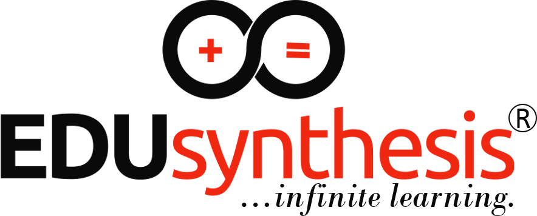

<!doctype html>
<html lang="en">
<head>
<meta charset="utf-8">
<meta name="viewport" content="width=device-width,initial-scale=1,viewport-fit=cover">
<title>Free SAT Math Practice Test | EDUsynthesis</title>
<meta name="description" content="Free full-length Digital SAT Math practice test: 44 questions, two timed modules, instant projected score on the 200-800 scale and a detailed skills report. From EDUsynthesis, online K-12 Math tutoring worldwide.">
<meta property="og:type" content="website">
<meta property="og:url" content="https://edusynthesis.github.io/math-assessments/sat-practice.html">
<meta property="og:title" content="Free SAT Math Practice Test | EDUsynthesis">
<meta property="og:description" content="44 questions, two timed modules, an instant projected score (200-800) and a full skills report. Free.">
<meta property="og:image" content="https://edusynthesis.github.io/math-assessments/EDUsynthesis_OG_Banner.png">
<meta name="twitter:card" content="summary_large_image">
<link rel="icon" type="image/png" href="assets/icon_light.png">
<style>:root{box-sizing:border-box}body{margin:0;padding:0}img{max-width:100%}[hidden]{display:none!important}</style>
<link rel="preconnect" href="https://fonts.googleapis.com">
<link rel="stylesheet" href="https://fonts.googleapis.com/css2?family=Poppins:wght@500;600;700&family=Inter:wght@400;500;600;700&display=swap">
<style>
/* Layout: exam-console app — one focused column for testing, a scannable report grid afterwards. EDUsynthesis black/red. */
:root{
  --bg:#F3F3F2; --surface:#FFFFFF; --surface-2:#ECECEA; --ink:#0A0A0A; --muted:#545454;
  --line:#7A7A7A; --line-strong:#0A0A0A; --accent:#F02711; --accent-ink:#FFFFFF; --accent-soft:#FDE3DF;
  --good:#16794A; --good-soft:#DDF2E6; --bad:#B42318; --bad-soft:#FBE1DE; --warn:#9A5B00; --warn-soft:#FBEBD0;
  --sel:#0A0A0A; --sel-ink:#FFFFFF;
  --f-display:"Poppins",Calibri,"Segoe UI",system-ui,sans-serif;
  --f-body:"Inter",Calibri,"Segoe UI",system-ui,sans-serif;
  --r:10px;
}
@media (prefers-color-scheme: dark){:root:not([data-theme="light"]){
  --bg:#0A0A0A; --surface:#17171A; --surface-2:#232328; --ink:#F3F3F3; --muted:#B8B8BC;
  --line:#8E8E96; --line-strong:#ECECEC; --accent:#FF4631; --accent-ink:#FFFFFF; --accent-soft:#3A1612;
  --good:#45D48E; --good-soft:#123323; --bad:#FF7A6E; --bad-soft:#3A1715; --warn:#F5B94A; --warn-soft:#3A2A0C;
  --sel:#F3F3F3; --sel-ink:#0A0A0A; color-scheme:dark}}
:root[data-theme="dark"]{
  --bg:#0A0A0A; --surface:#17171A; --surface-2:#232328; --ink:#F3F3F3; --muted:#B8B8BC;
  --line:#8E8E96; --line-strong:#ECECEC; --accent:#FF4631; --accent-ink:#FFFFFF; --accent-soft:#3A1612;
  --good:#45D48E; --good-soft:#123323; --bad:#FF7A6E; --bad-soft:#3A1715; --warn:#F5B94A; --warn-soft:#3A2A0C;
  --sel:#F3F3F3; --sel-ink:#0A0A0A; color-scheme:dark}

*{box-sizing:border-box}
body{background:var(--bg);color:var(--ink);font-family:var(--f-body);font-size:16px;line-height:1.55;-webkit-text-size-adjust:100%}
button,input,select{font:inherit;color:inherit;touch-action:manipulation}
button{cursor:pointer}
:focus-visible{outline:3px solid var(--accent);outline-offset:2px}
.wrap{max-width:980px;margin:0 auto;padding-left:max(16px,env(safe-area-inset-left,0px));padding-right:max(16px,env(safe-area-inset-right,0px));padding-block:20px 48px}
h1,h2,h3{font-family:var(--f-display);line-height:1.2;text-wrap:balance;margin:0}
.eyebrow{font-size:12px;letter-spacing:.12em;text-transform:uppercase;color:var(--muted);font-weight:600}
.brand{display:flex;align-items:baseline;gap:10px;flex-wrap:wrap}
.brand b{font-family:var(--f-display);font-weight:700;font-size:18px;letter-spacing:-.01em}
.brand b span{color:var(--accent)}
.brand small{color:var(--muted);font-style:italic}
a.brand{text-decoration:none;display:inline-flex}
.brand .logo{height:56px;width:auto}
.lg-dark{display:none}
@media (prefers-color-scheme: dark){:root:not([data-theme="light"]) .lg-dark{display:block}:root:not([data-theme="light"]) .lg-light{display:none}}
.cta{margin-top:34px;border:2px solid var(--accent);background:var(--accent-soft);border-radius:var(--r);padding:20px}
.cta h2{font-size:22px;margin-bottom:6px}
.cta p{margin:0 0 14px;max-width:62ch}
a.btn{text-decoration:none}
a.btn.primary,a.btn.primary:visited{color:var(--accent-ink)}
a.btn.dark,a.btn.dark:visited{color:var(--sel-ink)}
.foot{margin-top:28px;display:flex;gap:16px;flex-wrap:wrap;font-size:14px}
.foot a{color:var(--ink);font-weight:600;min-height:44px;display:inline-flex;align-items:center}
.btn{min-height:48px;padding:10px 20px;border-radius:999px;border:2px solid var(--line-strong);background:var(--surface);font-weight:600;display:inline-flex;align-items:center;justify-content:center;gap:8px}
.btn.primary{background:var(--accent);border-color:var(--accent);color:var(--accent-ink)}
.btn.dark{background:var(--sel);border-color:var(--sel);color:var(--sel-ink)}
.btn.ghost{border-color:var(--line)}
.btn:disabled{opacity:.45;cursor:not-allowed}
.row{display:flex;gap:12px;flex-wrap:wrap;align-items:center}
.card{background:var(--surface);border:1.5px solid var(--line);border-radius:var(--r);padding:20px}
.chip{display:inline-flex;align-items:center;gap:6px;padding:3px 10px;border-radius:999px;font-size:13px;font-weight:600;border:1.5px solid currentColor;white-space:nowrap}
.chip.good{color:var(--good);background:var(--good-soft)}
.chip.bad{color:var(--bad);background:var(--bad-soft)}
.chip.warn{color:var(--warn);background:var(--warn-soft)}
.chip.neutral{color:var(--muted)}
.num{font-variant-numeric:tabular-nums}
.fr{display:inline-flex;flex-direction:column;vertical-align:middle;text-align:center;font-size:.92em;line-height:1.15;margin:0 2px}
.fr>span:first-child{border-bottom:1.5px solid currentColor;padding:0 3px}
.fr>span:last-child{padding:0 3px}
.rt{border-top:1.5px solid currentColor;padding-left:2px}

/* Start screen */
.hero{display:grid;grid-template-columns:1.3fr 1fr;gap:24px;margin-top:20px}
@media (max-width:760px){.hero{grid-template-columns:1fr}}
.hero h1{font-size:clamp(30px,5vw,46px);font-weight:700;letter-spacing:-.02em}
.hero h1 em{font-style:normal;color:var(--accent)}
.lead{color:var(--muted);max-width:60ch}
.spec{display:grid;grid-template-columns:repeat(4,1fr);border:1.5px solid var(--line);border-radius:var(--r);overflow:hidden;margin-top:20px;background:var(--surface)}
.spec div{padding:12px 14px;border-right:1.5px solid var(--line)}
.spec div:last-child{border-right:0}
.spec strong{display:block;font-family:var(--f-display);font-size:22px}
.spec span{font-size:13px;color:var(--muted)}
@media (max-width:520px){.spec{grid-template-columns:repeat(2,1fr)}.spec div:nth-child(2){border-right:0}.spec div:nth-child(-n+2){border-bottom:1.5px solid var(--line)}}
.form{display:grid;gap:14px}
.field label{display:block;font-weight:600;font-size:14px;margin-bottom:6px}
.field input,.field select{width:100%;min-height:48px;padding:10px 12px;border:1.5px solid var(--line);border-radius:8px;background:var(--surface);font-size:16px}
.blueprint{margin-top:22px}
.blueprint table{width:100%;border-collapse:collapse;font-size:14px}
.blueprint th,.blueprint td{border:1.5px solid var(--line);padding:8px 10px;text-align:left}
.blueprint th{background:var(--surface-2)}

/* Test console */
.topbar{position:sticky;top:env(safe-area-inset-top,0px);z-index:20;background:var(--surface);border-bottom:2px solid var(--line-strong)}
body::before{content:"";position:fixed;inset:0 0 auto;height:env(safe-area-inset-top,0px);z-index:10;background:var(--surface)}
.topbar .in{max-width:980px;margin:0 auto;padding-left:max(16px,env(safe-area-inset-left,0px));padding-right:max(16px,env(safe-area-inset-right,0px));padding-block:8px;display:flex;align-items:center;gap:10px;flex-wrap:wrap;justify-content:space-between}
.mod-label{font-family:var(--f-display);font-weight:600}
.timer{font-family:var(--f-display);font-size:22px;font-weight:600;font-variant-numeric:tabular-nums;min-width:84px;text-align:center}
.timer.low{color:var(--accent)}
.short{display:none}
@media (max-width:560px){.long{display:none}.short{display:inline}}
html{touch-action:manipulation;-webkit-tap-highlight-color:transparent;-webkit-text-size-adjust:100%}
button,.tool,.btn{-webkit-user-select:none;user-select:none}
.topbar .in{flex-wrap:nowrap}
.tbtn{min-height:44px;border:1.5px solid var(--line);border-radius:8px;background:var(--surface);padding:0 10px;color:var(--ink)}

a.tool,a.tool:visited{color:var(--ink)}
@media (max-width:420px){.timer{font-size:19px;min-width:72px}.tool{padding:6px 10px}.bottombar .btn{padding-inline:16px}}
@media (max-height:500px) and (orientation:landscape){.topbar{position:static}.topbar .in,.bottombar .in{padding-block:4px}.bottombar .btn{min-height:44px;padding-block:6px}.wrap{padding-block:12px 32px}.prompt{font-size:17px}}
@media (max-width:560px){.keypad{gap:6px}.keypad button{min-height:50px}.choice .opt{font-size:16px}}
.tool{min-height:44px;min-width:44px;padding:6px 12px;border-radius:8px;border:1.5px solid var(--line);background:var(--surface);font-size:14px;font-weight:600;text-decoration:none;display:inline-flex;align-items:center;gap:6px}
.qhead{display:flex;justify-content:space-between;align-items:center;gap:12px;border-bottom:1.5px dashed var(--line);padding-bottom:10px;margin-bottom:16px;flex-wrap:wrap}
.qnum{display:inline-flex;align-items:center;justify-content:center;min-width:40px;height:40px;background:var(--sel);color:var(--sel-ink);font-family:var(--f-display);font-weight:600;border-radius:6px;padding:0 8px}
.flagbtn{min-height:44px;padding:6px 14px;border-radius:8px;border:1.5px solid var(--line);background:var(--surface);font-weight:600;font-size:14px}
.flagbtn[aria-pressed="true"]{border-color:var(--accent);color:var(--accent);background:var(--accent-soft)}
.prompt{font-size:18px;line-height:1.7;max-width:68ch}
.prompt table{border-collapse:collapse;margin:10px 0}
.prompt td,.prompt th{border:1.5px solid var(--line);padding:6px 12px;text-align:center}
.choices{display:grid;gap:10px;margin-top:18px;max-width:640px}
.choice{display:flex;align-items:stretch;gap:8px}
.choice .opt{flex:1;display:flex;align-items:center;gap:14px;min-height:56px;padding:8px 14px;border:2px solid var(--line);border-radius:10px;background:var(--surface);text-align:left;font-size:17px}
.choice .opt .L{flex:none;width:34px;height:34px;border-radius:50%;border:2px solid var(--line-strong);display:inline-flex;align-items:center;justify-content:center;font-weight:700}
.choice .opt[aria-pressed="true"]{border-color:var(--sel);box-shadow:inset 0 0 0 2px var(--sel)}
.choice .opt[aria-pressed="true"] .L{background:var(--sel);color:var(--sel-ink);border-color:var(--sel)}
.choice.out .opt{opacity:.5}
.choice.out .opt .t{text-decoration:line-through;text-decoration-thickness:2px}
.choice .x{flex:none;width:52px;border:1.5px solid var(--line);border-radius:10px;background:var(--surface);font-size:13px;font-weight:600;color:var(--muted)}
.choice.out .x{color:var(--accent);border-color:var(--accent)}
.spr{margin-top:18px;max-width:420px}
.spr input{width:100%;min-height:56px;font-size:24px;font-family:var(--f-display);padding:8px 14px;border:2px solid var(--line-strong);border-radius:10px;background:var(--surface);font-variant-numeric:tabular-nums}
.spr .hint{font-size:13px;color:var(--muted);margin-top:6px}
.keypad{display:grid;grid-template-columns:repeat(5,1fr);gap:8px;margin-top:12px}
.keypad button{min-height:52px;border-radius:10px;border:1.5px solid var(--line);background:var(--surface-2);font-size:20px;font-weight:600}
.preview{margin-top:10px;font-size:15px}
.bottombar{position:sticky;bottom:0;background:var(--surface);border-top:2px solid var(--line-strong);z-index:15;padding-bottom:env(safe-area-inset-bottom,0px)}
.bottombar .in{max-width:980px;margin:0 auto;padding-left:max(16px,env(safe-area-inset-left,0px));padding-right:max(16px,env(safe-area-inset-right,0px));padding-block:10px;display:flex;justify-content:space-between;align-items:center;gap:10px}
.navgrid{display:grid;grid-template-columns:repeat(auto-fill,minmax(52px,1fr));gap:8px;margin-top:14px}
.navgrid button{position:relative;min-height:52px;border-radius:8px;border:2px dashed var(--line);background:var(--surface);font-weight:700;font-variant-numeric:tabular-nums}
.navgrid button.done{border-style:solid;border-color:var(--sel);background:var(--sel);color:var(--sel-ink)}
.navgrid button.cur{outline:3px solid var(--accent);outline-offset:2px}
.navgrid button .fl{position:absolute;top:-7px;right:-7px;width:18px;height:18px;border-radius:50%;background:var(--accent);border:2px solid var(--surface)}
.legend{display:flex;gap:16px;flex-wrap:wrap;font-size:13px;color:var(--muted);margin-top:10px}
.legend i{display:inline-block;width:14px;height:14px;border-radius:3px;vertical-align:-2px;margin-right:5px;border:2px solid var(--line)}
.sheet{position:fixed;inset:0;z-index:50;background:rgba(0,0,0,.55);display:flex;align-items:flex-end;justify-content:center;padding:max(16px,env(safe-area-inset-top,0px)) max(12px,env(safe-area-inset-right,0px)) 0 max(12px,env(safe-area-inset-left,0px))}
.sheet .panel{background:var(--surface);border:2px solid var(--line-strong);border-bottom:0;border-radius:16px 16px 0 0;width:100%;max-width:760px;max-height:88vh;overflow:auto;padding:20px 20px calc(20px + env(safe-area-inset-bottom,0px))}
.ref{display:grid;grid-template-columns:repeat(auto-fill,minmax(200px,1fr));gap:10px;margin-top:12px}
.ref div{border:1.5px solid var(--line);border-radius:8px;padding:10px 12px;font-size:15px}
.ref div b{display:block;font-size:13px;color:var(--muted);font-weight:600;margin-bottom:2px}

/* Report */
.rhead{display:grid;grid-template-columns:auto 1fr;gap:28px;align-items:center;margin-top:18px}
@media (max-width:700px){.rhead{grid-template-columns:1fr}}
.dial{width:220px;max-width:100%}
.dial text{font-family:var(--f-display)}
.bandchip{font-family:var(--f-display);font-size:15px;padding:5px 14px}
.stats{display:grid;grid-template-columns:repeat(4,1fr);gap:0;border:1.5px solid var(--line);border-radius:var(--r);overflow:hidden;background:var(--surface);margin-top:22px}
.stats>div{padding:14px 16px;border-right:1.5px solid var(--line)}
.stats>div:last-child{border-right:0}
.stats strong{font-family:var(--f-display);font-size:26px;display:block;font-variant-numeric:tabular-nums}
.stats span{font-size:13px;color:var(--muted)}
@media (max-width:620px){.stats{grid-template-columns:repeat(2,1fr)}.stats>div:nth-child(2){border-right:0}.stats>div:nth-child(-n+2){border-bottom:1.5px solid var(--line)}}
section.rs{margin-top:34px}
section.rs h2{font-size:22px;margin-bottom:4px}
section.rs .sub{color:var(--muted);font-size:14px;margin:0 0 14px}
.scale{position:relative;height:56px;margin-top:8px}
.scale .track{position:absolute;left:0;right:0;top:18px;height:14px;border-radius:7px;border:1.5px solid var(--line);overflow:hidden;display:flex}
.scale .track span{height:100%;border-right:1.5px solid var(--line)}
.scale .track span:last-child{border-right:0}
.scale .rng{position:absolute;top:12px;height:26px;border:3px solid var(--accent);border-radius:6px;background:color-mix(in srgb,var(--accent) 22%,transparent)}
.scale .mk{position:absolute;top:4px;width:2px;height:42px;background:var(--line-strong)}
.scale .mk b{position:absolute;top:44px;transform:translateX(-50%);font-size:11px;white-space:nowrap;color:var(--muted);font-weight:600}
.scale-ticks{display:flex;justify-content:space-between;font-size:12px;color:var(--muted);margin-top:4px}
.dom{display:grid;gap:14px}
.dom .r{display:grid;grid-template-columns:minmax(150px,1.2fr) 3fr auto;gap:14px;align-items:center}
@media (max-width:560px){.dom .r{grid-template-columns:1fr auto}.dom .r .bar{grid-column:1/-1;order:3}}
.bar{height:22px;border:1.5px solid var(--line);border-radius:6px;background:var(--surface-2);overflow:hidden}
.bar i{display:block;height:100%;background:var(--sel)}
.tblwrap{overflow-x:auto;border:1.5px solid var(--line);border-radius:var(--r);background:var(--surface)}
table.sk{width:100%;border-collapse:collapse;font-size:15px;min-width:560px}
table.sk th,table.sk td{padding:10px 12px;border-bottom:1.5px solid var(--line);text-align:left;vertical-align:middle}
table.sk th{font-size:12px;letter-spacing:.08em;text-transform:uppercase;color:var(--muted);background:var(--surface-2)}
table.sk tr:last-child td{border-bottom:0}
table.sk td.n{text-align:right;font-variant-numeric:tabular-nums;white-space:nowrap}
.minibar{width:90px;height:10px;border:1.5px solid var(--line);border-radius:5px;overflow:hidden;display:inline-block;vertical-align:middle;margin-right:8px}
.minibar i{display:block;height:100%}
.three{display:grid;grid-template-columns:repeat(3,1fr);gap:12px}
@media (max-width:620px){.three{grid-template-columns:1fr}}
.three .card strong{font-family:var(--f-display);font-size:30px;display:block;font-variant-numeric:tabular-nums}
.chartbox{overflow-x:auto;border:1.5px solid var(--line);border-radius:var(--r);background:var(--surface);padding:12px}
.chartbox svg{display:block;min-width:720px;width:100%;height:auto}
.insights{display:grid;gap:8px;margin-top:12px;padding:0;list-style:none}
.insights li{padding-left:18px;position:relative}
.insights li::before{content:"";position:absolute;left:0;top:.62em;width:8px;height:8px;background:var(--accent);border-radius:2px}
.plan{display:grid;gap:12px;counter-reset:p}
.plan .card{display:grid;grid-template-columns:auto 1fr;gap:14px;counter-increment:p}
.plan .card::before{content:counter(p);font-family:var(--f-display);font-weight:700;font-size:22px;width:44px;height:44px;border-radius:50%;background:var(--accent);color:var(--accent-ink);display:flex;align-items:center;justify-content:center}
.plan h3{font-size:17px}
.plan p{margin:4px 0 0;color:var(--muted)}
.filters{display:flex;gap:8px;flex-wrap:wrap;margin-bottom:12px}
.filters button{min-height:44px;padding:6px 16px;border-radius:999px;border:1.5px solid var(--line);background:var(--surface);font-weight:600;font-size:14px}
.filters button[aria-pressed="true"]{background:var(--sel);color:var(--sel-ink);border-color:var(--sel)}
.qr{border:1.5px solid var(--line);border-radius:var(--r);background:var(--surface);margin-bottom:10px;overflow:hidden}
.qr>button{width:100%;display:flex;align-items:center;gap:12px;min-height:56px;padding:10px 14px;border:0;background:transparent;text-align:left}
.qr>button .mark{flex:none;width:30px;height:30px;border-radius:50%;display:flex;align-items:center;justify-content:center;font-weight:700;color:var(--accent-ink)}
.qr .meta{flex:1;min-width:0}
.qr .meta small{display:block;color:var(--muted);font-size:13px}
.qr .body{padding:4px 16px 16px;border-top:1.5px dashed var(--line)}
.qr .ans{display:flex;gap:18px;flex-wrap:wrap;margin:10px 0;font-size:15px}
.qr .ex{background:var(--surface-2);border-radius:8px;padding:10px 14px;font-size:15px}
.note{font-size:13px;color:var(--muted);max-width:75ch}
.banner{border:2px solid var(--warn);background:var(--warn-soft);color:var(--ink);border-radius:var(--r);padding:10px 14px;margin-top:14px;font-weight:500}
.confirm{border:2px solid var(--accent);background:var(--accent-soft);border-radius:var(--r);padding:16px;margin-top:16px}
@media (prefers-reduced-motion:no-preference){.bar i,.minibar i{transition:width .6s ease}}
</style>

</head>
<body>
<div id="app"></div>
<div id="layer"></div>

<script src="https://cdnjs.cloudflare.com/ajax/libs/jspdf/2.5.1/jspdf.umd.min.js"></script>
<script>
(function(){
const F=(a,b)=>`<span class="fr"><span>${a}</span><span>${b}</span></span>`;
const X='<i>x</i>', Y='<i>y</i>';
const DOM={A:'Algebra',AM:'Advanced Math',P:'Problem-Solving & Data Analysis',G:'Geometry & Trigonometry'};
const DOMW={A:'≈35% of test',AM:'≈35% of test',P:'≈15% of test',G:'≈15% of test'};
const LV={E:'Easy',M:'Medium',H:'Hard'};

/* ---------- Question bank (44) ---------- */
const BASE=[
// MODULE 1
{m:1,d:'A',s:'Linear equations in one variable',l:'E',t:'mcq',q:`If 3${X} + 7 = 25, what is the value of ${X}?`,c:['4','6','8','10'],a:1,ex:`Subtract 7 from both sides: 3${X} = 18. Divide by 3: ${X} = 6.`},
{m:1,d:'P',s:'Percentages',l:'E',t:'mcq',q:`What is 15% of 240?`,c:['24','32','36','40'],a:2,ex:`0.15 × 240 = 36.`},
{m:1,d:'A',s:'Linear functions',l:'E',t:'spr',q:`The function <i>f</i> is defined by <i>f</i>(${X}) = 4${X} − 9. What is the value of <i>f</i>(5)?`,a:[11],ex:`<i>f</i>(5) = 4(5) − 9 = 20 − 9 = 11.`},
{m:1,d:'G',s:'Lines, angles & triangles',l:'E',t:'mcq',q:`Two angles are supplementary. The measure of the larger angle is 3 times the measure of the smaller angle. What is the measure, in degrees, of the smaller angle?`,c:['30','45','60','135'],a:1,ex:`Supplementary angles sum to 180°. ${X} + 3${X} = 180, so 4${X} = 180 and ${X} = 45.`},
{m:1,d:'AM',s:'Equivalent expressions',l:'E',t:'mcq',q:`Which expression is equivalent to (2${X} + 3)(${X} − 4)?`,c:[`2${X}<sup>2</sup> − 5${X} − 12`,`2${X}<sup>2</sup> + 5${X} − 12`,`2${X}<sup>2</sup> − 11${X} − 12`,`2${X}<sup>2</sup> − 5${X} + 12`],a:0,ex:`Expand: 2${X}<sup>2</sup> − 8${X} + 3${X} − 12 = 2${X}<sup>2</sup> − 5${X} − 12.`},
{m:1,d:'P',s:'Ratios, rates & units',l:'E',t:'mcq',q:`A car travels 210 miles using 7 gallons of fuel. At this rate, how many gallons of fuel are needed to travel 330 miles?`,c:['9','10','11','12'],a:2,ex:`Rate = 210 ÷ 7 = 30 miles per gallon. 330 ÷ 30 = 11 gallons.`},
{m:1,d:'A',s:'Linear equations in two variables',l:'M',t:'mcq',q:`A line in the ${X}${Y}-plane passes through the points (2, 5) and (6, 17). Which equation defines the line?`,c:[`${Y} = 3${X} − 1`,`${Y} = 3${X} + 1`,`${Y} = 4${X} − 3`,`${Y} = 2${X} + 1`],a:0,ex:`Slope = (17 − 5) ÷ (6 − 2) = 3. Using (2, 5): 5 = 3(2) + <i>b</i>, so <i>b</i> = −1.`},
{m:1,d:'A',s:'Systems of linear equations',l:'M',t:'spr',q:`${X} + ${Y} = 14<br>${X} − ${Y} = 4<br>What is the value of ${X} in the solution to the system of equations above?`,a:[9],ex:`Add the equations: 2${X} = 18, so ${X} = 9.`},
{m:1,d:'P',s:'One-variable data',l:'M',t:'mcq',q:`The data set is 4, 7, 7, 9, 13. How much greater is the mean of the data set than its median?`,c:['0','1','2','3'],a:1,ex:`Mean = 40 ÷ 5 = 8. Median = 7 (the middle value). 8 − 7 = 1.`},
{m:1,d:'AM',s:'Nonlinear functions',l:'M',t:'mcq',q:`The function <i>g</i> is defined by <i>g</i>(${X}) = ${X}<sup>2</sup> − 6${X} + 5. What is the minimum value of <i>g</i>(${X})?`,c:['−4','−5','3','5'],a:0,ex:`The vertex is at ${X} = −(−6) ÷ 2 = 3. <i>g</i>(3) = 9 − 18 + 5 = −4.`},
{m:1,d:'A',s:'Linear inequalities',l:'M',t:'mcq',q:`A plumber charges a $65 call-out fee plus $40 per hour. A customer can spend at most $305. What is the maximum number of whole hours the plumber can work?`,c:['5','6','7','8'],a:1,ex:`65 + 40<i>h</i> ≤ 305 → 40<i>h</i> ≤ 240 → <i>h</i> ≤ 6.`},
{m:1,d:'G',s:'Right triangles & trigonometry',l:'M',t:'mcq',q:`In right triangle <i>ABC</i>, angle <i>C</i> is the right angle, <i>AC</i> = 12 and <i>BC</i> = 9. What is the value of sin <i>A</i>?`,c:[F(3,4),F(3,5),F(4,5),F(4,3)],a:1,ex:`Hypotenuse <i>AB</i> = √(12² + 9²) = 15. sin <i>A</i> = opposite ÷ hypotenuse = <i>BC</i> ÷ <i>AB</i> = 9 ÷ 15 = 3/5.`},
{m:1,d:'AM',s:'Nonlinear equations & systems',l:'M',t:'spr',q:`What is the positive solution to the equation ${X}<sup>2</sup> − 2${X} − 24 = 0?`,a:[6],ex:`Factor: (${X} − 6)(${X} + 4) = 0, so ${X} = 6 or ${X} = −4. The positive solution is 6.`},
{m:1,d:'P',s:'Two-variable data',l:'M',t:'mcq',q:`The line of best fit ${Y} = 2.4${X} + 18 models the height ${Y}, in centimetres, of a plant ${X} weeks after it was measured. Which is the best interpretation of 2.4?`,c:['The height of the plant when first measured','The predicted increase in height each week','The number of weeks the plant was measured','The predicted height after 1 week'],a:1,ex:`The slope gives the change in ${Y} per one-unit change in ${X}: about 2.4 cm per week.`},
{m:1,d:'A',s:'Linear functions',l:'M',t:'mcq',q:`Ada has $480 in savings and spends $35 each week. Which function gives the amount <i>B</i>, in dollars, left after <i>w</i> weeks?`,c:[`<i>B</i>(<i>w</i>) = 35<i>w</i> − 480`,`<i>B</i>(<i>w</i>) = 480 − 35<i>w</i>`,`<i>B</i>(<i>w</i>) = 480<i>w</i> − 35`,`<i>B</i>(<i>w</i>) = 445<i>w</i>`],a:1,ex:`Start at 480 and subtract 35 for each week: 480 − 35<i>w</i>.`},
{m:1,d:'G',s:'Circles',l:'M',t:'mcq',q:`A circle in the ${X}${Y}-plane has equation (${X} − 3)<sup>2</sup> + (${Y} + 2)<sup>2</sup> = 49. What are its centre and radius?`,c:['Centre (3, −2), radius 7','Centre (−3, 2), radius 7','Centre (3, −2), radius 49','Centre (−3, 2), radius 49'],a:0,ex:`Form (${X} − <i>h</i>)² + (${Y} − <i>k</i>)² = <i>r</i>²: centre (3, −2), <i>r</i> = √49 = 7.`},
{m:1,d:'AM',s:'Equivalent expressions',l:'M',t:'mcq',q:`Which expression is equivalent to ${F(`${X}<sup>2</sup> − 9`,`${X} + 3`)} for ${X} ≠ −3?`,c:[`${X} − 3`,`${X} + 3`,`${X} − 9`,`${X}<sup>2</sup> − 3`],a:0,ex:`${X}² − 9 = (${X} − 3)(${X} + 3). Cancel (${X} + 3) to get ${X} − 3.`},
{m:1,d:'P',s:'Probability',l:'M',t:'spr',q:`A bag contains 5 red, 7 blue and 8 green marbles. One marble is chosen at random. What is the probability that it is blue?`,a:[0.35],disp:'7/20 or .35',ex:`7 blue out of 5 + 7 + 8 = 20 marbles: 7/20 = 0.35.`},
{m:1,d:'AM',s:'Nonlinear functions',l:'M',t:'mcq',q:`The population of a town is modelled by <i>P</i>(<i>t</i>) = 1,500(1.04)<sup><i>t</i></sup>, where <i>t</i> is years after 2020. Which statement is true?`,c:['The population increases by 4% each year.','The population increases by 40% each year.','The population increases by 1.04 people each year.','The population increases by 104% each year.'],a:0,ex:`A growth factor of 1.04 means 100% + 4%: a 4% increase per year.`},
{m:1,d:'A',s:'Systems of linear equations',l:'H',t:'spr',q:`3${X} + <i>k</i>${Y} = 12<br>6${X} + 10${Y} = 18<br>In the system above, <i>k</i> is a constant. If the system has no solution, what is the value of <i>k</i>?`,a:[5],ex:`No solution means parallel lines: coefficients in proportion but constants not. 3/6 = <i>k</i>/10 gives <i>k</i> = 5, and 12/18 ≠ 1/2, so the lines are distinct.`},
{m:1,d:'G',s:'Area & volume',l:'H',t:'mcq',q:`A right circular cylinder has a volume of 160π cm³ and a radius of 4 cm. If the radius is doubled and the height is halved, what is the volume of the new cylinder?`,c:['80π','160π','320π','640π'],a:2,ex:`Original height: 160π ÷ (16π) = 10. New cylinder: π(8)²(5) = 320π. (Doubling <i>r</i> multiplies volume by 4; halving <i>h</i> divides by 2.)`},
{m:1,d:'AM',s:'Nonlinear equations & systems',l:'H',t:'spr',q:`The equation ${X}<sup>2</sup> + <i>b</i>${X} + 16 = 0, where <i>b</i> is a positive constant, has exactly one real solution. What is the value of <i>b</i>?`,a:[8],ex:`One real solution means the discriminant is zero: <i>b</i>² − 4(1)(16) = 0, so <i>b</i>² = 64 and <i>b</i> = 8.`},
// MODULE 2
{m:2,d:'A',s:'Linear equations in one variable',l:'M',t:'mcq',q:`If ${F(2,3)}(${X} − 6) = 10, what is the value of ${X}?`,c:['9','16','21','24'],a:2,ex:`Multiply both sides by 3/2: ${X} − 6 = 15, so ${X} = 21.`},
{m:2,d:'P',s:'Percentages',l:'M',t:'mcq',q:`The price of a jacket is increased by 20%. The new price is then decreased by 20%. The final price is what percent of the original price?`,c:['96%','100%','104%','80%'],a:0,ex:`1.20 × 0.80 = 0.96, so the final price is 96% of the original.`},
{m:2,d:'A',s:'Linear functions',l:'M',t:'spr',q:`For the linear function <i>h</i>, <i>h</i>(2) = 11 and <i>h</i>(6) = 23. What is the value of <i>h</i>(10)?`,a:[35],ex:`Slope = (23 − 11) ÷ (6 − 2) = 3. From ${X} = 6 to ${X} = 10 adds 4 × 3 = 12: <i>h</i>(10) = 35.`},
{m:2,d:'AM',s:'Equivalent expressions',l:'M',t:'mcq',q:`Which expression is equivalent to 4${X}<sup>2</sup> − 25?`,c:[`(2${X} − 5)<sup>2</sup>`,`(2${X} − 5)(2${X} + 5)`,`(4${X} − 5)(${X} + 5)`,`(4${X} − 25)(${X} + 1)`],a:1,ex:`Difference of two squares: (2${X})² − 5² = (2${X} − 5)(2${X} + 5).`},
{m:2,d:'P',s:'Ratios, rates & units',l:'M',t:'spr',q:`A recipe uses ${F(3,4)} cup of sugar to make 12 cookies. How many cups of sugar are needed to make 40 cookies?`,a:[2.5],disp:'5/2 or 2.5',ex:`Sugar per cookie = 0.75 ÷ 12 = 0.0625. 0.0625 × 40 = 2.5 cups (or 5/2).`},
{m:2,d:'G',s:'Lines, angles & triangles',l:'H',t:'mcq',q:`Triangle <i>PQR</i> is similar to triangle <i>XYZ</i>, with <i>PQ</i> corresponding to <i>XY</i>. If <i>PQ</i> = 6, <i>XY</i> = 15 and the area of triangle <i>PQR</i> is 20, what is the area of triangle <i>XYZ</i>?`,c:['50','75','100','125'],a:3,ex:`Scale factor = 15 ÷ 6 = 2.5. Areas scale by 2.5² = 6.25. 20 × 6.25 = 125.`},
{m:2,d:'A',s:'Linear inequalities',l:'M',t:'mcq',q:`Which point (${X}, ${Y}) satisfies both ${Y} &gt; 2${X} − 3 and ${Y} ≤ −${X} + 6?`,c:['(0, 0)','(4, 1)','(3, 5)','(−1, 8)'],a:0,ex:`(0, 0): 0 &gt; −3 ✓ and 0 ≤ 6 ✓. The others fail: (4, 1) gives 1 &gt; 5 ✗; (3, 5) gives 5 ≤ 3 ✗; (−1, 8) gives 8 ≤ 7 ✗.`},
{m:2,d:'AM',s:'Nonlinear functions',l:'H',t:'mcq',q:`The function <i>f</i> is defined by <i>f</i>(${X}) = 2(${X} − 3)<sup>2</sup> + <i>k</i>, where <i>k</i> is a constant. The graph of <i>f</i> passes through (5, 13). What is the value of <i>f</i>(0)?`,c:['18','23','13','5'],a:1,ex:`13 = 2(2)² + <i>k</i> gives <i>k</i> = 5. Then <i>f</i>(0) = 2(−3)² + 5 = 18 + 5 = 23.`},
{m:2,d:'P',s:'Inference from samples',l:'M',t:'mcq',q:`A school has 2,800 students. In a random sample of 400 students, 120 said they walk to school. Based on the sample, which is the best estimate of the number of students at the school who walk to school?`,c:['120','280','840','1,200'],a:2,ex:`Sample proportion = 120 ÷ 400 = 30%. 0.30 × 2,800 = 840.`},
{m:2,d:'G',s:'Right triangles & trigonometry',l:'H',t:'spr',q:`In a right triangle, the acute angles measure ${X}° and 32°. Equivalently, cos ${X}° = sin 32°. What is the value of ${X}?`,a:[58],ex:`Complementary angles: sin θ = cos(90° − θ). So ${X} = 90 − 32 = 58.`},
{m:2,d:'A',s:'Systems of linear equations',l:'H',t:'mcq',q:`A theatre sold 150 tickets. Adult tickets cost $12 and child tickets cost $7. Total ticket revenue was $1,445. How many adult tickets were sold?`,c:['71','79','85','89'],a:1,ex:`12<i>a</i> + 7(150 − <i>a</i>) = 1,445 → 5<i>a</i> + 1,050 = 1,445 → <i>a</i> = 79.`},
{m:2,d:'AM',s:'Nonlinear equations & systems',l:'H',t:'mcq',q:`${Y} = ${X}<sup>2</sup> − 4${X} + 7<br>${Y} = 2${X} − 2<br>How many solutions does the system above have?`,c:['0','1','2','Infinitely many'],a:1,ex:`Set equal: ${X}² − 6${X} + 9 = 0 → (${X} − 3)² = 0. One repeated root, so the line is tangent to the parabola: exactly 1 solution.`},
{m:2,d:'P',s:'Evaluating statistical claims',l:'H',t:'mcq',q:`Researchers randomly selected 500 adults from one city. They found that adults who exercised more hours per week tended to report better sleep. Which conclusion is best supported?`,c:['Exercising more causes better sleep for all adults.','There is an association between exercise and sleep quality among adults in that city.','Better sleep causes adults in that city to exercise more.','No conclusion can be drawn about adults in that city.'],a:1,ex:`Random <i>sampling</i> allows generalising to that city's adults. Without random <i>assignment</i> to treatments, no cause-and-effect claim is justified.`},
{m:2,d:'AM',s:'Nonlinear functions',l:'H',t:'spr',q:`A machine is worth $8,000. Its value decreases by 15% each year. What is its value, in dollars, after 2 years?`,a:[5780],ex:`8,000 × (0.85)² = 8,000 × 0.7225 = 5,780.`},
{m:2,d:'G',s:'Circles',l:'H',t:'mcq',q:`A circle has radius 9. What is the length of an arc subtended by a central angle of 80°?`,c:['2π','4π','8π','18π'],a:1,ex:`Arc = (80 ÷ 360) × 2π(9) = (2/9) × 18π = 4π.`},
{m:2,d:'AM',s:'Equivalent expressions',l:'H',t:'mcq',q:`For ${X} &gt; 0, which expression is equivalent to ${F(`${X}<sup>3/2</sup> · ${X}<sup>1/2</sup>`,`${X}<sup>−1</sup>`)}?`,c:[X,`${X}<sup>2</sup>`,`${X}<sup>3</sup>`,`${X}<sup>4</sup>`],a:2,ex:`Numerator: ${X}<sup>3/2 + 1/2</sup> = ${X}². Dividing by ${X}<sup>−1</sup> adds 1 to the exponent: ${X}³.`},
{m:2,d:'P',s:'One-variable data',l:'H',t:'mcq',q:`A data set of 10 numbers has a mean of 24. When the value 60 is removed, what is the mean of the remaining 9 numbers?`,c:['18','20','21','22'],a:1,ex:`Total = 10 × 24 = 240. Remove 60: 180. 180 ÷ 9 = 20.`},
{m:2,d:'A',s:'Linear equations in two variables',l:'H',t:'spr',q:`Line ℓ is perpendicular to the line 2${X} − 5${Y} = 10 and passes through the point (4, 1). What is the ${Y}-coordinate of the ${Y}-intercept of line ℓ?`,a:[11],ex:`The given line has slope 2/5, so ℓ has slope −5/2. ${Y} − 1 = −5/2(${X} − 4) → ${Y} = −5/2 ${X} + 11.`},
{m:2,d:'AM',s:'Nonlinear equations & systems',l:'H',t:'mcq',q:`What is the solution set of √(${X} + 7) = ${X} − 5?`,c:['{2}','{9}','{2, 9}','No solution'],a:1,ex:`Square: ${X} + 7 = ${X}² − 10${X} + 25 → ${X}² − 11${X} + 18 = 0 → ${X} = 2 or 9. Check: ${X} = 2 gives 3 = −3 ✗ (extraneous). ${X} = 9 gives 4 = 4 ✓.`},
{m:2,d:'G',s:'Area & volume',l:'H',t:'spr',q:`A square is inscribed in a circle of radius 5. What is the area of the square?`,a:[50],ex:`The square's diagonal is the circle's diameter, 10. Area = diagonal² ÷ 2 = 100 ÷ 2 = 50.`},
{m:2,d:'AM',s:'Equivalent expressions',l:'H',t:'spr',q:`If ${X}<sup>2</sup> + ${Y}<sup>2</sup> = 85 and ${X}${Y} = 18, what is the value of (${X} + ${Y})<sup>2</sup>?`,a:[121],ex:`(${X} + ${Y})² = ${X}² + 2${X}${Y} + ${Y}² = 85 + 36 = 121.`},
{m:2,d:'A',s:'Linear equations in one variable',l:'H',t:'mcq',q:`In the equation <i>a</i>${X} + 3 = 5${X} − <i>b</i>, <i>a</i> and <i>b</i> are constants. If the equation has infinitely many solutions, what is the value of <i>a</i> + <i>b</i>?`,c:['−2','2','8','5'],a:1,ex:`Infinitely many solutions: both sides identical. <i>a</i> = 5 and 3 = −<i>b</i>, so <i>b</i> = −3. <i>a</i> + <i>b</i> = 2.`}
];
/* ---------- Parallel versions: 4 per slot (slot order = BASE order) ---------- */
const S2=s=>`${s}<sup>2</sup>`;
const VAR=[
// 0 · Linear equations in one variable · E · mcq
[
{q:`If 5${X} − 4 = 31, what is the value of ${X}?`,c:['5','6','7','8'],a:2,ex:`Add 4: 5${X} = 35. Divide by 5: ${X} = 7.`},
{q:`If 4${X} + 9 = 41, what is the value of ${X}?`,c:['6','7','8','9'],a:2,ex:`Subtract 9: 4${X} = 32. Divide by 4: ${X} = 8.`},
{q:`If 2${X} − 11 = 13, what is the value of ${X}?`,c:['1','10','12','24'],a:2,ex:`Add 11: 2${X} = 24. Divide by 2: ${X} = 12.`},
{q:`If 7 + 6${X} = 43, what is the value of ${X}?`,c:['5','6','7','9'],a:1,ex:`Subtract 7: 6${X} = 36. Divide by 6: ${X} = 6.`}
],
// 1 · Percentages · E · mcq
[
{q:`What is 25% of 360?`,c:['72','80','90','100'],a:2,ex:`0.25 × 360 = 90.`},
{q:`What is 12% of 450?`,c:['45','54','60','64'],a:1,ex:`0.12 × 450 = 54.`},
{q:`What is 35% of 80?`,c:['24','28','32','35'],a:1,ex:`0.35 × 80 = 28.`},
{q:`What is 8% of 650?`,c:['48','52','58','65'],a:1,ex:`0.08 × 650 = 52.`}
],
// 2 · Linear functions · E · spr
[
{q:`The function <i>g</i> is defined by <i>g</i>(${X}) = 7${X} + 3. What is the value of <i>g</i>(4)?`,a:[31],ex:`<i>g</i>(4) = 7(4) + 3 = 28 + 3 = 31.`},
{q:`The function <i>f</i> is defined by <i>f</i>(${X}) = −2${X} + 15. What is the value of <i>f</i>(6)?`,a:[3],ex:`<i>f</i>(6) = −2(6) + 15 = −12 + 15 = 3.`},
{q:`The function <i>h</i> is defined by <i>h</i>(${X}) = 5${X} − 12. What is the value of <i>h</i>(7)?`,a:[23],ex:`<i>h</i>(7) = 5(7) − 12 = 35 − 12 = 23.`},
{q:`The function <i>f</i> is defined by <i>f</i>(${X}) = ${F(1,2)}${X} + 8. What is the value of <i>f</i>(10)?`,a:[13],ex:`<i>f</i>(10) = ½(10) + 8 = 5 + 8 = 13.`}
],
// 3 · Lines, angles & triangles · E · mcq
[
{q:`Two angles are complementary. The larger angle is 4 times the smaller angle. What is the measure, in degrees, of the smaller angle?`,c:['18','22.5','30','72'],a:0,ex:`Complementary angles sum to 90°. ${X} + 4${X} = 90, so 5${X} = 90 and ${X} = 18.`},
{q:`Two angles of a triangle measure 50° and 65°. What is the measure, in degrees, of the third angle?`,c:['55','65','75','115'],a:1,ex:`Angles in a triangle sum to 180°. 180 − 50 − 65 = 65.`},
{q:`Two angles are supplementary. One angle is 40° greater than the other. What is the measure, in degrees, of the smaller angle?`,c:['60','70','110','140'],a:1,ex:`${X} + (${X} + 40) = 180 → 2${X} = 140 → ${X} = 70.`},
{q:`Two vertical angles measure (2${X} + 10)° and (3${X} − 20)°. What is the value of ${X}?`,c:['10','30','50','70'],a:1,ex:`Vertical angles are equal: 2${X} + 10 = 3${X} − 20, so ${X} = 30.`}
],
// 4 · Equivalent expressions · E · mcq
[
{q:`Which expression is equivalent to (${X} + 5)(${X} − 3)?`,c:[`${S2(X)} + 2${X} − 15`,`${S2(X)} − 2${X} − 15`,`${S2(X)} + 8${X} − 15`,`${S2(X)} + 2${X} + 15`],a:0,ex:`${X}² − 3${X} + 5${X} − 15 = ${X}² + 2${X} − 15.`},
{q:`Which expression is equivalent to (3${X} − 2)(${X} + 4)?`,c:[`3${S2(X)} + 10${X} − 8`,`3${S2(X)} + 14${X} − 8`,`3${S2(X)} − 10${X} − 8`,`3${S2(X)} + 10${X} + 8`],a:0,ex:`3${X}² + 12${X} − 2${X} − 8 = 3${X}² + 10${X} − 8.`},
{q:`Which expression is equivalent to 3(2${X} − 5) − 4(${X} − 1)?`,c:[`2${X} − 11`,`2${X} − 19`,`2${X} − 16`,`10${X} − 11`],a:0,ex:`6${X} − 15 − 4${X} + 4 = 2${X} − 11. Note −4 × −1 = +4.`},
{q:`Which expression is equivalent to (${X} − 6)<sup>2</sup>?`,c:[`${S2(X)} − 12${X} + 36`,`${S2(X)} + 36`,`${S2(X)} − 36`,`${S2(X)} − 6${X} + 36`],a:0,ex:`(${X} − 6)(${X} − 6) = ${X}² − 6${X} − 6${X} + 36 = ${X}² − 12${X} + 36.`}
],
// 5 · Ratios, rates & units · E · mcq
[
{q:`A printer prints 48 pages in 3 minutes. At this rate, how many pages does it print in 10 minutes?`,c:['130','144','160','180'],a:2,ex:`48 ÷ 3 = 16 pages per minute. 16 × 10 = 160.`},
{q:`Five notebooks cost $8.75. At this price, how much do 12 notebooks cost?`,c:['$17.50','$19.25','$21.00','$22.75'],a:2,ex:`$8.75 ÷ 5 = $1.75 each. 12 × $1.75 = $21.00.`},
{q:`On a map, 2 cm represents 15 km. How many kilometres does 9 cm represent?`,c:['45','60','67.5','135'],a:2,ex:`1 cm = 7.5 km. 9 × 7.5 = 67.5 km.`},
{q:`A worker earns $132 for 8 hours of work. At this rate, how many hours must the worker work to earn $214.50?`,c:['12','13','14','15'],a:1,ex:`$132 ÷ 8 = $16.50 per hour. $214.50 ÷ $16.50 = 13 hours.`}
],
// 6 · Linear equations in two variables · M · mcq
[
{q:`A line in the ${X}${Y}-plane passes through (1, −2) and (4, 7). Which equation defines the line?`,c:[`${Y} = 3${X} − 5`,`${Y} = 3${X} + 5`,`${Y} = −3${X} + 1`,`${Y} = ${X} − 3`],a:0,ex:`Slope = (7 − (−2)) ÷ (4 − 1) = 3. Using (1, −2): −2 = 3 + <i>b</i>, so <i>b</i> = −5.`},
{q:`A line in the ${X}${Y}-plane passes through (−2, 8) and (4, −4). Which equation defines the line?`,c:[`${Y} = −2${X} + 4`,`${Y} = −2${X} − 4`,`${Y} = 2${X} + 12`,`${Y} = −${F(1,2)}${X} + 7`],a:0,ex:`Slope = (−4 − 8) ÷ (4 − (−2)) = −2. Using (4, −4): −4 = −8 + <i>b</i>, so <i>b</i> = 4.`},
{q:`What is the slope of the line with equation 6${X} − 3${Y} = 12?`,c:['−2','2','4','6'],a:1,ex:`Solve for ${Y}: −3${Y} = −6${X} + 12 → ${Y} = 2${X} − 4. The slope is 2.`},
{q:`A line has slope 4 and passes through the point (3, 10). Which equation defines the line?`,c:[`${Y} = 4${X} − 2`,`${Y} = 4${X} + 10`,`${Y} = 4${X} + 2`,`${Y} = 3${X} + 1`],a:0,ex:`10 = 4(3) + <i>b</i>, so <i>b</i> = −2: ${Y} = 4${X} − 2.`}
],
// 7 · Systems of linear equations · M · spr
[
{q:`2${X} + ${Y} = 17<br>${X} − ${Y} = 4<br>What is the value of ${X} in the solution to the system of equations above?`,a:[7],ex:`Add the equations: 3${X} = 21, so ${X} = 7.`},
{q:`${X} + 3${Y} = 19<br>${X} − ${Y} = 3<br>What is the value of ${Y} in the solution to the system of equations above?`,a:[4],ex:`Subtract the second equation from the first: 4${Y} = 16, so ${Y} = 4.`},
{q:`3${X} + 2${Y} = 24<br>${X} = 2${Y}<br>What is the value of ${X} in the solution to the system of equations above?`,a:[6],ex:`Substitute: 3(2${Y}) + 2${Y} = 24 → 8${Y} = 24 → ${Y} = 3, so ${X} = 6.`},
{q:`5${X} − 2${Y} = 11<br>3${X} + 2${Y} = 21<br>What is the value of ${Y} in the solution to the system of equations above?`,a:[4.5],disp:'9/2 or 4.5',ex:`Add: 8${X} = 32, so ${X} = 4. Then 3(4) + 2${Y} = 21 → 2${Y} = 9 → ${Y} = 4.5.`}
],
// 8 · One-variable data · M · mcq
[
{q:`The data set is 3, 5, 8, 8, 11. How much greater is the median of the data set than its mean?`,c:['0','1','2','3'],a:1,ex:`Mean = 35 ÷ 5 = 7. Median = 8. 8 − 7 = 1.`},
{q:`What is the mean of the data set 2, 4, 4, 6, 9?`,c:['4','5','6','7'],a:1,ex:`Sum = 25. 25 ÷ 5 = 5.`},
{q:`For the data set 10, 12, 15, 15, 18, 20, which statement is true?`,c:['The mean is greater than the median.','The mean is less than the median.','The mean is equal to the median.','The relationship cannot be determined.'],a:2,ex:`Mean = 90 ÷ 6 = 15. Median = (15 + 15) ÷ 2 = 15. They are equal.`},
{q:`What is the range of the data set 5, 7, 9, 9, 12, 18?`,c:['9','10','13','18'],a:2,ex:`Range = greatest − least = 18 − 5 = 13.`}
],
// 9 · Nonlinear functions · M · mcq
[
{q:`The function <i>h</i> is defined by <i>h</i>(${X}) = ${S2(X)} + 8${X} + 10. What is the minimum value of <i>h</i>(${X})?`,c:['−6','−4','10','26'],a:0,ex:`Vertex at ${X} = −8 ÷ 2 = −4. <i>h</i>(−4) = 16 − 32 + 10 = −6.`},
{q:`The function <i>f</i> is defined by <i>f</i>(${X}) = −${S2(X)} + 4${X} + 1. What is the maximum value of <i>f</i>(${X})?`,c:['1','2','5','9'],a:2,ex:`Vertex at ${X} = −4 ÷ (2 × −1) = 2. <i>f</i>(2) = −4 + 8 + 1 = 5.`},
{q:`What is the ${X}-coordinate of the vertex of the graph of <i>f</i>(${X}) = 2${S2(X)} − 12${X} + 7?`,c:['−3','3','6','−11'],a:1,ex:`${X} = −<i>b</i> ÷ 2<i>a</i> = 12 ÷ 4 = 3.`},
{q:`The function <i>f</i> is defined by <i>f</i>(${X}) = (${X} − 5)(${X} + 1). What is the minimum value of <i>f</i>(${X})?`,c:['−9','−5','2','9'],a:0,ex:`The zeros are 5 and −1, so the vertex is midway at ${X} = 2. <i>f</i>(2) = (−3)(3) = −9.`}
],
// 10 · Linear inequalities · M · mcq
[
{q:`A gym charges a $30 joining fee plus $12 per visit. Tunde can spend at most $150. What is the maximum number of visits he can make?`,c:['9','10','11','12'],a:1,ex:`30 + 12<i>v</i> ≤ 150 → 12<i>v</i> ≤ 120 → <i>v</i> ≤ 10.`},
{q:`A phone has 64 GB of storage, and 18 GB is already used. Each video uses 1.5 GB. What is the maximum number of whole videos that can be stored?`,c:['29','30','31','46'],a:1,ex:`18 + 1.5<i>v</i> ≤ 64 → 1.5<i>v</i> ≤ 46 → <i>v</i> ≤ 30.67. The maximum whole number is 30.`},
{q:`A taxi charges $4 plus $2.50 per mile. A rider can spend at most $30. What is the maximum whole number of miles the rider can travel?`,c:['10','11','12','13'],a:0,ex:`4 + 2.5<i>m</i> ≤ 30 → 2.5<i>m</i> ≤ 26 → <i>m</i> ≤ 10.4. The maximum whole number is 10.`},
{q:`A student has 48 points and needs at least 75 points. Each problem solved is worth 3 points. Which inequality shows the number of problems <i>p</i> the student must solve?`,c:[`48 + 3<i>p</i> ≥ 75`,`48 + 3<i>p</i> ≤ 75`,`3(48 + <i>p</i>) ≥ 75`,`48<i>p</i> + 3 ≥ 75`],a:0,ex:`Points so far plus 3 per problem must be at least 75: 48 + 3<i>p</i> ≥ 75.`}
],
// 11 · Right triangles & trigonometry · M · mcq
[
{q:`In right triangle <i>ABC</i>, angle <i>C</i> is the right angle, <i>AC</i> = 8 and <i>BC</i> = 15. What is the value of cos <i>A</i>?`,c:[F(8,17),F(15,17),F(8,15),F(15,8)],a:0,ex:`<i>AB</i> = √(8² + 15²) = 17. cos <i>A</i> = adjacent ÷ hypotenuse = 8/17.`},
{q:`In right triangle <i>ABC</i>, angle <i>B</i> is the right angle, <i>AB</i> = 5 and <i>BC</i> = 12. What is the value of tan <i>C</i>?`,c:[F(5,12),F(12,5),F(5,13),F(12,13)],a:0,ex:`For angle <i>C</i>, the opposite side is <i>AB</i> = 5 and the adjacent side is <i>BC</i> = 12. tan <i>C</i> = 5/12.`},
{q:`A right triangle has a hypotenuse of length 10 and an angle of 30°. What is the length of the side opposite the 30° angle?`,c:['5','5√3','10√3','20'],a:0,ex:`In a 30°-60°-90° triangle the side opposite 30° is half the hypotenuse: 10 ÷ 2 = 5.`},
{q:`For an acute angle ${X}, sin ${X} = ${F(7,25)}. What is the value of cos ${X}?`,c:[F(24,25),F(7,24),F(18,25),F(25,24)],a:0,ex:`Use a 7-24-25 right triangle: the adjacent side is √(25² − 7²) = 24, so cos ${X} = 24/25.`}
],
// 12 · Nonlinear equations & systems · M · spr
[
{q:`What is the positive solution to the equation ${S2(X)} + 3${X} − 40 = 0?`,a:[5],ex:`(${X} + 8)(${X} − 5) = 0, so ${X} = −8 or 5. The positive solution is 5.`},
{q:`What is the positive solution to the equation ${S2(X)} − ${X} − 42 = 0?`,a:[7],ex:`(${X} − 7)(${X} + 6) = 0, so ${X} = 7 or −6. The positive solution is 7.`},
{q:`What is the positive solution to the equation ${S2(X)} = 6${X} + 27?`,a:[9],ex:`${X}² − 6${X} − 27 = 0 → (${X} − 9)(${X} + 3) = 0. The positive solution is 9.`},
{q:`What is the positive solution to the equation 3${S2(X)} − 12 = 0?`,a:[2],ex:`3${X}² = 12 → ${X}² = 4 → ${X} = ±2. The positive solution is 2.`}
],
// 13 · Two-variable data · M · mcq
[
{q:`The equation ${Y} = −1.8${X} + 95 models the battery charge ${Y}, as a percentage, of a laptop ${X} hours after it is unplugged. What is the best interpretation of 95?`,c:['The battery charge when the laptop is unplugged','The decrease in battery charge each hour','The number of hours until the battery is empty','The increase in battery charge each hour'],a:0,ex:`95 is the value of ${Y} when ${X} = 0: the charge at the moment it is unplugged.`},
{q:`The total cost ${Y}, in dollars, of ${X} hours of tutoring is modelled by ${Y} = 12.5${X} + 40. What is the best interpretation of 12.5?`,c:['A one-time fee','The additional cost for each hour','The total cost for 1 hour','The number of hours booked'],a:1,ex:`The slope 12.5 is the change in cost for each additional hour.`},
{q:`The line of best fit for a scatterplot is ${Y} = 0.6${X} + 3. Based on the line, what is the predicted value of ${Y} when ${X} = 20?`,c:['12','15','18','23'],a:1,ex:`0.6(20) + 3 = 12 + 3 = 15.`},
{q:`The model <i>s</i> = 14<i>t</i> − 60 estimates daily ice-cream sales <i>s</i> when the temperature is <i>t</i> °C. According to the model, how many more sales are expected for each 5 °C increase in temperature?`,c:['14','60','70','80'],a:2,ex:`Each 1 °C adds 14 sales, so 5 °C adds 5 × 14 = 70.`}
],
// 14 · Linear functions · M · mcq
[
{q:`A tank contains 50 litres of water and is filled at 6 litres per minute. Which function gives the volume <i>V</i>, in litres, after <i>t</i> minutes?`,c:[`<i>V</i>(<i>t</i>) = 50 + 6<i>t</i>`,`<i>V</i>(<i>t</i>) = 6 + 50<i>t</i>`,`<i>V</i>(<i>t</i>) = 50 − 6<i>t</i>`,`<i>V</i>(<i>t</i>) = 56<i>t</i>`],a:0,ex:`Start at 50 and add 6 each minute: 50 + 6<i>t</i>.`},
{q:`A taxi charges $3.50 plus $1.75 per kilometre. Which function gives the cost <i>C</i>, in dollars, of a trip of <i>k</i> kilometres?`,c:[`<i>C</i>(<i>k</i>) = 1.75<i>k</i> + 3.50`,`<i>C</i>(<i>k</i>) = 3.50<i>k</i> + 1.75`,`<i>C</i>(<i>k</i>) = 5.25<i>k</i>`,`<i>C</i>(<i>k</i>) = 1.75(<i>k</i> + 3.50)`],a:0,ex:`The per-kilometre rate multiplies <i>k</i>; the fixed $3.50 is added once.`},
{q:`A candle is 30 cm tall and burns down 2.5 cm each hour. Which function gives its height <i>H</i>, in cm, after <i>h</i> hours?`,c:[`<i>H</i>(<i>h</i>) = 30 − 2.5<i>h</i>`,`<i>H</i>(<i>h</i>) = 2.5<i>h</i> − 30`,`<i>H</i>(<i>h</i>) = 30<i>h</i> − 2.5`,`<i>H</i>(<i>h</i>) = 27.5<i>h</i>`],a:0,ex:`Start at 30 and subtract 2.5 per hour: 30 − 2.5<i>h</i>.`},
{q:`For a linear function <i>f</i>, <i>f</i>(0) = 12 and <i>f</i>(${X}) decreases by 3 for each increase of 1 in ${X}. Which equation defines <i>f</i>?`,c:[`<i>f</i>(${X}) = 12 − 3${X}`,`<i>f</i>(${X}) = 3${X} − 12`,`<i>f</i>(${X}) = 12${X} − 3`,`<i>f</i>(${X}) = −3${X} − 12`],a:0,ex:`The ${Y}-intercept is 12 and the slope is −3: <i>f</i>(${X}) = 12 − 3${X}.`}
],
// 15 · Circles · M · mcq
[
{q:`A circle in the ${X}${Y}-plane has equation (${X} + 4)<sup>2</sup> + (${Y} − 1)<sup>2</sup> = 36. What are its centre and radius?`,c:['Centre (−4, 1), radius 6','Centre (4, −1), radius 6','Centre (−4, 1), radius 36','Centre (4, −1), radius 36'],a:0,ex:`(${X} − (−4))² + (${Y} − 1)² = 6²: centre (−4, 1), radius 6.`},
{q:`A circle in the ${X}${Y}-plane has equation ${S2(X)} + ${S2(Y)} − 6${X} + 8${Y} = 0. What are its centre and radius?`,c:['Centre (3, −4), radius 5','Centre (−3, 4), radius 5','Centre (3, −4), radius 25','Centre (−6, 8), radius 10'],a:0,ex:`Complete the square: (${X} − 3)² − 9 + (${Y} + 4)² − 16 = 0 → (${X} − 3)² + (${Y} + 4)² = 25. Centre (3, −4), radius 5.`},
{q:`Which equation represents a circle with centre (2, −3) and radius 4?`,c:[`(${X} − 2)<sup>2</sup> + (${Y} + 3)<sup>2</sup> = 16`,`(${X} + 2)<sup>2</sup> + (${Y} − 3)<sup>2</sup> = 16`,`(${X} − 2)<sup>2</sup> + (${Y} + 3)<sup>2</sup> = 4`,`(${X} + 2)<sup>2</sup> + (${Y} − 3)<sup>2</sup> = 4`],a:0,ex:`(${X} − <i>h</i>)² + (${Y} − <i>k</i>)² = <i>r</i>² with <i>h</i> = 2, <i>k</i> = −3, <i>r</i>² = 16.`},
{q:`A circle has centre (1, 2) and passes through the point (4, 6). What is the radius of the circle?`,c:['3','4','5','25'],a:2,ex:`Radius = distance = √((4 − 1)² + (6 − 2)²) = √(9 + 16) = 5.`}
],
// 16 · Equivalent expressions · M · mcq
[
{q:`Which expression is equivalent to ${F(`${S2(X)} + 5${X} + 6`,`${X} + 2`)} for ${X} ≠ −2?`,c:[`${X} + 3`,`${X} + 2`,`${X} + 6`,`${S2(X)} + 3`],a:0,ex:`${X}² + 5${X} + 6 = (${X} + 2)(${X} + 3). Cancel (${X} + 2).`},
{q:`Which expression is equivalent to ${F(`4${S2(X)} − 1`,`2${X} − 1`)} for ${X} ≠ ${F(1,2)}?`,c:[`2${X} + 1`,`2${X} − 1`,`4${X} + 1`,`2${X}`],a:0,ex:`4${X}² − 1 = (2${X} − 1)(2${X} + 1). Cancel (2${X} − 1).`},
{q:`Which expression is equivalent to ${F(1,X)} + ${F(1,`${X} + 1`)} for ${X} &gt; 0?`,c:[F(`2${X} + 1`,`${S2(X)} + ${X}`),F(2,`2${X} + 1`),F(1,`${S2(X)} + ${X}`),F(`${X} + 1`,`${S2(X)} + ${X}`)],a:0,ex:`Common denominator ${X}(${X} + 1): (${X} + 1 + ${X}) ÷ (${X}² + ${X}) = (2${X} + 1)/(${X}² + ${X}).`},
{q:`Which expression is equivalent to ${F(`${X}<sup>3</sup> − 2${S2(X)}`,S2(X))} for ${X} ≠ 0?`,c:[`${X} − 2`,`${X} − 2${S2(X)}`,`${S2(X)} − 2`,`−${X}`],a:0,ex:`Divide each term by ${X}²: ${X}³ ÷ ${X}² − 2${X}² ÷ ${X}² = ${X} − 2.`}
],
// 17 · Probability · M · spr
[
{q:`Of the 80 students in a year group, 32 take French. One student is chosen at random. What is the probability that the student takes French?`,a:[0.4],disp:'2/5 or .4',ex:`32 ÷ 80 = 0.4.`},
{q:`A fair six-sided die is rolled once. What is the probability that the number rolled is greater than 4?`,a:[1/3],disp:'1/3 (or .3333)',ex:`Only 5 and 6 are greater than 4: 2 out of 6 = 1/3.`},
{q:`<table><tr><th></th><th>Boys</th><th>Girls</th></tr><tr><th>Grade 9</th><td>18</td><td>22</td></tr><tr><th>Grade 10</th><td>25</td><td>15</td></tr></table>A girl is chosen at random from the students in the table. What is the probability that she is in Grade 10?`,a:[15/37],disp:'15/37 (or .4054)',ex:`There are 22 + 15 = 37 girls, and 15 of them are in Grade 10: 15/37.`},
{q:`A spinner has 8 equal sections numbered 1 to 8. What is the probability that the spinner lands on a prime number?`,a:[0.5],disp:'1/2 or .5',ex:`The primes are 2, 3, 5 and 7: 4 out of 8 = 0.5.`}
],
// 18 · Nonlinear functions · M · mcq
[
{q:`The value of a car is modelled by <i>V</i>(<i>t</i>) = 24,000(0.85)<sup><i>t</i></sup>, where <i>t</i> is years after purchase. Which statement is true?`,c:['The value decreases by 15% each year.','The value decreases by 85% each year.','The value decreases by $0.85 each year.','The value increases by 15% each year.'],a:0,ex:`A decay factor of 0.85 = 1 − 0.15, a 15% decrease per year.`},
{q:`A bacteria population is modelled by <i>N</i>(<i>t</i>) = 300 · 2<sup><i>t</i>/4</sup>, where <i>t</i> is in hours. Which statement is true?`,c:['The population doubles every 4 hours.','The population doubles every hour.','The population quadruples every hour.','The population increases by 4 each hour.'],a:0,ex:`The exponent increases by 1 each time <i>t</i> increases by 4, so the population doubles every 4 hours.`},
{q:`An account balance is modelled by <i>f</i>(${X}) = 500(1.06)<sup>${X}</sup>, where ${X} is years after the account was opened. What does 500 represent?`,c:['The amount when the account was opened','The amount added each year','The yearly percent growth','The amount after 1 year'],a:0,ex:`When ${X} = 0, <i>f</i>(0) = 500: the starting amount.`},
{q:`A quantity starts at 80 and decreases by 25% each week. Which function models the quantity after <i>w</i> weeks?`,c:[`80(0.75)<sup><i>w</i></sup>`,`80(0.25)<sup><i>w</i></sup>`,`80(1.25)<sup><i>w</i></sup>`,`80 − 0.25<i>w</i>`],a:0,ex:`Losing 25% leaves 75%, so multiply by 0.75 each week.`}
],
// 19 · Systems of linear equations · H · spr
[
{q:`4${X} − 6${Y} = 10<br><i>k</i>${X} − 9${Y} = 7<br>In the system above, <i>k</i> is a constant. If the system has no solution, what is the value of <i>k</i>?`,a:[6],ex:`Parallel lines need proportional coefficients: 4/<i>k</i> = −6/−9 = 2/3, so <i>k</i> = 6. Scaling the first equation by 1.5 gives 6${X} − 9${Y} = 15 ≠ 7, so the lines are distinct.`},
{q:`2${X} + 5${Y} = 8<br>6${X} + <i>k</i>${Y} = 24<br>In the system above, <i>k</i> is a constant. If the system has infinitely many solutions, what is the value of <i>k</i>?`,a:[15],ex:`The second equation must be 3 times the first: 3 × 5 = 15 (and 3 × 8 = 24 ✓).`},
{q:`<i>a</i>${X} + 3${Y} = 9<br>4${X} − 6${Y} = 5<br>In the system above, <i>a</i> is a constant. If the system has no solution, what is the value of <i>a</i>?`,a:[-2],ex:`Proportional coefficients: <i>a</i>/4 = 3/−6, so <i>a</i> = −2. Then −2${X} + 3${Y} = 9 scales to 4${X} − 6${Y} = −18 ≠ 5, so there is no solution.`},
{q:`3${X} − 2${Y} = 6<br>${Y} = <i>k</i>${X} + 4<br>In the system above, <i>k</i> is a constant. If the system has no solution, what is the value of <i>k</i>?`,a:[1.5],disp:'3/2 or 1.5',ex:`The first line is ${Y} = 1.5${X} − 3. No solution means equal slopes and different intercepts: <i>k</i> = 1.5.`}
],
// 20 · Area & volume · H · mcq
[
{q:`A cube has a total surface area of 150 cm². What is the volume of the cube, in cm³?`,c:['25','100','125','150'],a:2,ex:`Each face is 150 ÷ 6 = 25, so the edge is 5. Volume = 5³ = 125.`},
{q:`A right circular cone has radius 6 and height 10. What is its volume?`,c:['60π','120π','360π','40π'],a:1,ex:`V = ⅓πr²h = ⅓ × π × 36 × 10 = 120π.`},
{q:`The radius of a sphere is tripled. By what factor is the volume multiplied?`,c:['3','9','27','81'],a:2,ex:`Volume scales with the cube of the length factor: 3³ = 27.`},
{q:`A rectangular prism measures 4 by 6 by <i>h</i>. It has the same volume as a cube with edge length 6. What is the value of <i>h</i>?`,c:['6','8','9','12'],a:2,ex:`Cube volume = 216. 4 × 6 × <i>h</i> = 216 → <i>h</i> = 9.`}
],
// 21 · Nonlinear equations & systems · H · spr
[
{q:`The equation ${S2(X)} − 10${X} + <i>c</i> = 0, where <i>c</i> is a constant, has exactly one real solution. What is the value of <i>c</i>?`,a:[25],ex:`Discriminant = 100 − 4<i>c</i> = 0, so <i>c</i> = 25.`},
{q:`The equation <i>k</i>${S2(X)} + 12${X} + 4 = 0, where <i>k</i> is a nonzero constant, has exactly one real solution. What is the value of <i>k</i>?`,a:[9],ex:`Discriminant = 144 − 16<i>k</i> = 0, so <i>k</i> = 9.`},
{q:`The equation 2${S2(X)} + <i>b</i>${X} + 18 = 0, where <i>b</i> is a positive constant, has exactly one real solution. What is the value of <i>b</i>?`,a:[12],ex:`Discriminant = <i>b</i>² − 4(2)(18) = 0 → <i>b</i>² = 144 → <i>b</i> = 12.`},
{q:`The equation ${S2(X)} + 6${X} + <i>c</i> = 0 has no real solutions. What is the smallest integer value of <i>c</i>?`,a:[10],ex:`No real solutions: 36 − 4<i>c</i> &lt; 0 → <i>c</i> &gt; 9. The smallest integer is 10.`}
],
// 22 · Linear equations in one variable · M · mcq
[
{q:`If ${F(3,4)}(${X} + 8) = 12, what is the value of ${X}?`,c:['4','8','16','24'],a:1,ex:`Multiply by 4/3: ${X} + 8 = 16, so ${X} = 8.`},
{q:`If ${F(X,5)} − 3 = 7, what is the value of ${X}?`,c:['20','35','50','52'],a:2,ex:`${X}/5 = 10, so ${X} = 50.`},
{q:`If 4(${X} − 2) = 2(${X} + 5), what is the value of ${X}?`,c:['1.5','6','9','18'],a:2,ex:`4${X} − 8 = 2${X} + 10 → 2${X} = 18 → ${X} = 9.`},
{q:`If ${F(`${X} + 4`,3)} = ${F(`${X} − 2`,2)}, what is the value of ${X}?`,c:['2','10','14','16'],a:2,ex:`Cross-multiply: 2(${X} + 4) = 3(${X} − 2) → 2${X} + 8 = 3${X} − 6 → ${X} = 14.`}
],
// 23 · Percentages · M · mcq
[
{q:`After a 25% discount, a pair of shoes costs $90. What was the original price?`,c:['$112.50','$115','$120','$125'],a:2,ex:`$90 is 75% of the original. 90 ÷ 0.75 = $120.`},
{q:`A town's population grew from 2,500 to 3,100. What was the percent increase?`,c:['19.4%','24%','31%','60%'],a:1,ex:`Increase = 600. 600 ÷ 2,500 = 0.24 = 24%.`},
{q:`A shop marks up an item 40% above cost, then sells it at a 10% discount. The selling price is what percent of the cost?`,c:['126%','130%','136%','150%'],a:0,ex:`1.40 × 0.90 = 1.26, so 126% of cost.`},
{q:`30% of a number is 42. What is 70% of the same number?`,c:['56','84','98','112'],a:2,ex:`The number is 42 ÷ 0.30 = 140. 0.70 × 140 = 98.`}
],
// 24 · Linear functions · M · spr
[
{q:`For the linear function <i>f</i>, <i>f</i>(1) = 4 and <i>f</i>(5) = −8. What is the value of <i>f</i>(0)?`,a:[7],ex:`Slope = (−8 − 4) ÷ (5 − 1) = −3. <i>f</i>(0) = 4 + 3 = 7.`},
{q:`For the linear function <i>g</i>, <i>g</i>(−2) = 1 and <i>g</i>(4) = 10. What is the value of <i>g</i>(8)?`,a:[16],ex:`Slope = 9 ÷ 6 = 1.5. From ${X} = 4 to 8 adds 4 × 1.5 = 6: <i>g</i>(8) = 16.`},
{q:`<table><tr><th>${X}</th><td>0</td><td>3</td><td>6</td></tr><tr><th>${Y}</th><td>5</td><td>14</td><td>23</td></tr></table>The table shows values of a linear relationship. What is the value of ${Y} when ${X} = 20?`,a:[65],ex:`Slope = 9 ÷ 3 = 3 and the ${Y}-intercept is 5: ${Y} = 3(20) + 5 = 65.`},
{q:`A line passes through (3, 8) and (7, 20). What is the ${X}-coordinate of the point on the line where ${Y} = 44?`,a:[15],ex:`Slope = 12 ÷ 4 = 3, so ${Y} = 3${X} − 1. 44 = 3${X} − 1 → ${X} = 15.`}
],
// 25 · Equivalent expressions · M · mcq
[
{q:`Which expression is equivalent to 9${S2(X)} − 16?`,c:[`(3${X} − 4)(3${X} + 4)`,`(3${X} − 4)<sup>2</sup>`,`(9${X} − 4)(${X} + 4)`,`(3${X} − 8)(3${X} + 2)`],a:0,ex:`Difference of squares: (3${X})² − 4² = (3${X} − 4)(3${X} + 4).`},
{q:`Which expression is equivalent to ${S2(X)} − 10${X} + 25?`,c:[`(${X} − 5)<sup>2</sup>`,`(${X} + 5)<sup>2</sup>`,`(${X} − 5)(${X} + 5)`,`(${X} − 25)(${X} − 1)`],a:0,ex:`Perfect square: (${X} − 5)² = ${X}² − 10${X} + 25.`},
{q:`Which expression is equivalent to 2${S2(X)} + 7${X} + 3?`,c:[`(2${X} + 1)(${X} + 3)`,`(2${X} + 3)(${X} + 1)`,`(2${X} − 1)(${X} − 3)`,`(2${X} + 7)(${X} + 3)`],a:0,ex:`(2${X} + 1)(${X} + 3) = 2${X}² + 6${X} + ${X} + 3 = 2${X}² + 7${X} + 3.`},
{q:`Which expression is equivalent to 3${S2(X)} − 12${X}?`,c:[`3${X}(${X} − 4)`,`3${X}(${X} − 12)`,`3(${S2(X)} − 12${X})`,`${X}(3${X} − 4)`],a:0,ex:`Factor out 3${X}: 3${X}(${X} − 4).`}
],
// 26 · Ratios, rates & units · M · spr
[
{q:`One inch is equal to 2.54 centimetres. How many centimetres are equal to 60 inches?`,a:[152.4],ex:`60 × 2.54 = 152.4 cm.`},
{q:`A car travels at 72 kilometres per hour. What is this speed in metres per second?`,a:[20],ex:`72 km/h = 72,000 m ÷ 3,600 s = 20 m/s.`},
{q:`Three painters working at the same rate can paint a fence in 8 hours. How many hours would 4 painters working at that rate take?`,a:[6],ex:`Total work = 3 × 8 = 24 painter-hours. 24 ÷ 4 = 6 hours.`},
{q:`Sand and cement are mixed in the ratio 5 : 2 by mass. How many kilograms of cement are in 28 kg of the mixture?`,a:[8],ex:`5 + 2 = 7 parts. Each part = 28 ÷ 7 = 4 kg. Cement = 2 × 4 = 8 kg.`}
],
// 27 · Lines, angles & triangles · H · mcq
[
{q:`Two similar triangles have corresponding sides in the ratio 3 : 5. The area of the smaller triangle is 27. What is the area of the larger triangle?`,c:['45','75','125','135'],a:1,ex:`Areas scale by (5/3)² = 25/9. 27 × 25/9 = 75.`},
{q:`In triangle <i>ABC</i>, point <i>D</i> is on <i>AB</i> and point <i>E</i> is on <i>AC</i>, with <i>DE</i> parallel to <i>BC</i>. If <i>AD</i> = 4, <i>DB</i> = 6 and <i>DE</i> = 5, what is <i>BC</i>?`,c:['7.5','11','12.5','15'],a:2,ex:`Triangles <i>ADE</i> and <i>ABC</i> are similar with <i>AB</i> = 10. <i>BC</i> = 5 × 10/4 = 12.5.`},
{q:`The angles of a triangle are in the ratio 2 : 3 : 7. What is the measure, in degrees, of the largest angle?`,c:['60','90','105','120'],a:2,ex:`2 + 3 + 7 = 12 parts. 180 ÷ 12 = 15. Largest = 7 × 15 = 105.`},
{q:`A triangle has sides 7, 24 and 25. A similar triangle has longest side 75. What is the perimeter of the similar triangle?`,c:['112','150','168','224'],a:2,ex:`Scale factor = 75 ÷ 25 = 3. Perimeter = 3 × (7 + 24 + 25) = 168.`}
],
// 28 · Linear inequalities · M · mcq
[
{q:`Which point (${X}, ${Y}) satisfies both ${Y} ≥ ${X} + 1 and ${Y} &lt; −2${X} + 7?`,c:['(1, 3)','(3, 2)','(0, 8)','(2, 1)'],a:0,ex:`(1, 3): 3 ≥ 2 ✓ and 3 &lt; 5 ✓. (3, 2) fails 2 ≥ 4; (0, 8) fails 8 &lt; 7; (2, 1) fails 1 ≥ 3.`},
{q:`Which inequality describes all solutions of −3${X} + 5 &gt; 17?`,c:[`${X} &lt; −4`,`${X} &gt; −4`,`${X} &lt; 4`,`${X} &gt; 4`],a:0,ex:`−3${X} &gt; 12. Dividing by a negative number reverses the sign: ${X} &lt; −4.`},
{q:`Which point (${X}, ${Y}) satisfies both ${Y} &lt; 3${X} − 2 and ${Y} &gt; −${X}?`,c:['(2, 1)','(0, 0)','(1, 4)','(−1, −6)'],a:0,ex:`(2, 1): 1 &lt; 4 ✓ and 1 &gt; −2 ✓. (0, 0) fails 0 &lt; −2; (1, 4) fails 4 &lt; 1; (−1, −6) fails −6 &gt; 1.`},
{q:`A hall holds at most 200 people. Adult tickets cost $12 and child tickets cost $6, and ticket sales must be at least $1,800. Which system represents the numbers of adult tickets <i>a</i> and child tickets <i>c</i>?`,c:[`<i>a</i> + <i>c</i> ≤ 200 and 12<i>a</i> + 6<i>c</i> ≥ 1,800`,`<i>a</i> + <i>c</i> ≥ 200 and 12<i>a</i> + 6<i>c</i> ≤ 1,800`,`<i>a</i> + <i>c</i> ≤ 200 and 6<i>a</i> + 12<i>c</i> ≥ 1,800`,`12<i>a</i> + 6<i>c</i> ≤ 200 and <i>a</i> + <i>c</i> ≥ 1,800`],a:0,ex:`At most 200 people: <i>a</i> + <i>c</i> ≤ 200. Revenue at least $1,800 with $12 adults and $6 children: 12<i>a</i> + 6<i>c</i> ≥ 1,800.`}
],
// 29 · Nonlinear functions · H · mcq
[
{q:`The function <i>f</i> is defined by <i>f</i>(${X}) = <i>a</i>(${X} − 2)<sup>2</sup> + 3, where <i>a</i> is a constant. The graph of <i>f</i> passes through (4, 15). What is the value of <i>f</i>(5)?`,c:['27','30','33','48'],a:1,ex:`15 = <i>a</i>(2)² + 3 → <i>a</i> = 3. <i>f</i>(5) = 3(3)² + 3 = 30.`},
{q:`The graph of <i>g</i>(${X}) = ${S2(X)} + <i>b</i>${X} + <i>c</i> has its vertex at (3, −7). What is the value of <i>c</i>?`,c:['−7','2','9','16'],a:1,ex:`Vertex form: (${X} − 3)² − 7 = ${X}² − 6${X} + 9 − 7 = ${X}² − 6${X} + 2. So <i>c</i> = 2.`},
{q:`What is the positive ${X}-intercept of the graph of ${Y} = −2(${X} + 1)<sup>2</sup> + 8?`,c:['1','2','3','−3'],a:0,ex:`0 = −2(${X} + 1)² + 8 → (${X} + 1)² = 4 → ${X} = 1 or −3. The positive intercept is 1.`},
{q:`The function <i>f</i> is defined by <i>f</i>(${X}) = 3 · 2<sup>${X}</sup> + <i>k</i>, where <i>k</i> is a constant. If <i>f</i>(2) = 17, what is the value of <i>f</i>(4)?`,c:['48','53','58','101'],a:1,ex:`3(4) + <i>k</i> = 17 → <i>k</i> = 5. <i>f</i>(4) = 3(16) + 5 = 53.`}
],
// 30 · Inference from samples · M · mcq
[
{q:`In a random sample of 250 voters in a town, 145 support a new park. The town has 18,000 voters. Which is the best estimate of the number of voters in the town who support the park?`,c:['7,560','10,440','14,500','18,000'],a:1,ex:`145 ÷ 250 = 58%. 0.58 × 18,000 = 10,440.`},
{q:`A survey estimates that 62% of residents support a policy, with a margin of error of 4%. Which value is a plausible percentage of all residents who support the policy?`,c:['55%','60%','67%','70%'],a:1,ex:`The plausible range is 62% ± 4%, from 58% to 66%. Only 60% lies in it.`},
{q:`To estimate the average number of hours all teenagers in a city spend playing games, a researcher surveys members of the city's chess club. What is the main problem with this method?`,c:['The sample is not representative of all teenagers in the city.','The sample is too large to be useful.','Averages cannot be estimated from surveys.','The researcher should survey adults instead.'],a:0,ex:`Chess club members are not a random sample of the city's teenagers, so the results may be biased.`},
{q:`A factory tests a random sample of 300 bulbs and finds 9 defective. Based on the sample, how many defective bulbs would be expected in a batch of 50,000?`,c:['150','900','1,500','3,000'],a:2,ex:`9 ÷ 300 = 3%. 0.03 × 50,000 = 1,500.`}
],
// 31 · Right triangles & trigonometry · H · spr
[
{q:`For an acute angle measuring ${X}°, sin(${X}°) = cos(25°). What is the value of ${X}?`,a:[65],ex:`sin θ = cos(90° − θ), so ${X} = 90 − 25 = 65.`},
{q:`In right triangle <i>ABC</i>, angle <i>C</i> is the right angle and sin <i>A</i> = 0.6. What is the value of cos <i>B</i>?`,a:[0.6],disp:'3/5 or .6',ex:`<i>A</i> and <i>B</i> are complementary, so cos <i>B</i> = sin <i>A</i> = 0.6.`},
{q:`An angle measures 150°. Its measure in radians is <i>a</i>π. What is the value of <i>a</i>?`,a:[5/6],disp:'5/6 (or .8333)',ex:`150 × π/180 = 5π/6, so <i>a</i> = 5/6.`},
{q:`In a 30°-60°-90° triangle, the shorter leg has length 7. The longer leg has length <i>k</i>√3. What is the value of <i>k</i>?`,a:[7],ex:`The longer leg is √3 times the shorter leg: 7√3, so <i>k</i> = 7.`}
],
// 32 · Systems of linear equations · H · mcq
[
{q:`A jar holds 40 coins, all dimes ($0.10) and quarters ($0.25). The total value is $6.70. How many quarters are in the jar?`,c:['18','22','24','26'],a:0,ex:`0.10(40 − <i>q</i>) + 0.25<i>q</i> = 6.70 → 4 + 0.15<i>q</i> = 6.70 → <i>q</i> = 18.`},
{q:`A chemist mixes a 30% acid solution with a 70% acid solution to make 20 litres of a 45% solution. How many litres of the 30% solution are used?`,c:['7.5','10','12.5','15'],a:2,ex:`0.3<i>a</i> + 0.7(20 − <i>a</i>) = 0.45(20) → 14 − 0.4<i>a</i> = 9 → <i>a</i> = 12.5.`},
{q:`2${X} + 3${Y} = 23<br>5${X} − ${Y} = 15<br>If (${X}, ${Y}) is the solution to the system, what is the value of ${X} + ${Y}?`,c:['7','8','9','11'],a:2,ex:`From the second equation ${Y} = 5${X} − 15. Then 2${X} + 15${X} − 45 = 23 → ${X} = 4, ${Y} = 5. Sum = 9.`},
{q:`A shop sells pens for $1.20 and notebooks for $3.50. A customer buys 25 items for $55.30. How many notebooks did the customer buy?`,c:['9','11','13','14'],a:1,ex:`1.20(25 − <i>n</i>) + 3.50<i>n</i> = 55.30 → 30 + 2.30<i>n</i> = 55.30 → <i>n</i> = 11.`}
],
// 33 · Nonlinear equations & systems · H · mcq
[
{q:`${Y} = ${S2(X)} − 5<br>${Y} = −${X} + 1<br>How many solutions does the system above have?`,c:['0','1','2','Infinitely many'],a:2,ex:`${X}² − 5 = −${X} + 1 → ${X}² + ${X} − 6 = 0 → (${X} + 3)(${X} − 2) = 0. Two solutions.`},
{q:`${Y} = ${S2(X)} + 3<br>${Y} = 2${X}<br>How many solutions does the system above have?`,c:['0','1','2','Infinitely many'],a:0,ex:`${X}² − 2${X} + 3 = 0 has discriminant 4 − 12 = −8 &lt; 0, so there are no real solutions.`},
{q:`The graphs of ${Y} = ${S2(X)} − 4${X} + 1 and ${Y} = −2 intersect at two points. What is the sum of the ${X}-coordinates of these points?`,c:['−4','2','3','4'],a:3,ex:`${X}² − 4${X} + 3 = 0 → (${X} − 1)(${X} − 3) = 0. Sum = 1 + 3 = 4.`},
{q:`${Y} = 2${S2(X)}<br>${Y} = 8${X}<br>One solution to the system is (0, 0). What is the ${Y}-coordinate of the other solution?`,c:['4','8','16','32'],a:3,ex:`2${X}² = 8${X} → 2${X}(${X} − 4) = 0 → ${X} = 4. Then ${Y} = 8(4) = 32.`}
],
// 34 · Evaluating statistical claims · H · mcq
[
{q:`Volunteers from one hospital were randomly assigned to take a new drug or a placebo. Those taking the drug showed greater improvement. Which conclusion is best supported?`,c:['The drug causes improvement for all patients worldwide.','The drug likely caused the improvement among participants like those in the study.','There is no relationship between the drug and improvement.','Improvement caused patients to take the drug.'],a:1,ex:`Random <i>assignment</i> supports cause and effect, but the volunteers were not a random sample of all patients, so the result applies to people like those studied.`},
{q:`A sports website ran an online poll, and 85% of respondents said they watch sports every day. Why can't this result be generalised to all adults?`,c:['Respondents chose to take part and were visitors to a sports website.','The percentage is too high to be accurate.','Online polls can never give useful information.','The poll should have asked about weekly viewing.'],a:0,ex:`The sample is self-selected from a sports website, so it over-represents sports fans.`},
{q:`A random sample of 1,000 students from a school district found that students who eat breakfast tend to have higher grades. Which conclusion is best supported?`,c:['Eating breakfast causes higher grades for all students.','Students in the district who eat breakfast tend to have higher grades.','Higher grades cause students to eat breakfast.','The result applies to every student in the country.'],a:1,ex:`Random sampling supports generalising to the district. Without random assignment, only an association can be claimed.`},
{q:`Two random samples are taken from the same population: sample A has 400 people and sample B has 1,600 people. Which statement about their margins of error is most likely true?`,c:['Sample B has a smaller margin of error.','Sample A has a smaller margin of error.','The margins of error are equal.','Sample size does not affect the margin of error.'],a:0,ex:`Larger random samples give more precise estimates, so sample B's margin of error is likely smaller.`}
],
// 35 · Nonlinear functions · H · spr
[
{q:`$2,000 is invested at 5% interest compounded annually. What is the value of the investment, in dollars, after 2 years?`,a:[2205],ex:`2,000 × (1.05)² = 2,000 × 1.1025 = 2,205.`},
{q:`A population of 6,400 halves every 3 years. What is the population after 9 years?`,a:[800],ex:`9 years = 3 halvings: 6,400 × (½)³ = 800.`},
{q:`A culture of 150 bacteria triples every hour. How many bacteria are there after 3 hours?`,a:[4050],ex:`150 × 3³ = 150 × 27 = 4,050.`},
{q:`A machine worth $12,500 loses 20% of its value each year. What is its value, in dollars, after 3 years?`,a:[6400],ex:`12,500 × (0.8)³ = 12,500 × 0.512 = 6,400.`}
],
// 36 · Circles · H · mcq
[
{q:`A sector of a circle with radius 6 has a central angle of 120°. What is the area of the sector?`,c:['4π','6π','12π','36π'],a:2,ex:`Area = (120 ÷ 360) × π(6)² = ⅓ × 36π = 12π.`},
{q:`A circle has radius 9. What is the length of an arc with a central angle of ${F('2π',3)} radians?`,c:['3π','6π','9π','18π'],a:1,ex:`Arc length = <i>r</i>θ = 9 × 2π/3 = 6π.`},
{q:`An arc of length 5π lies on a circle of radius 10. What is the measure of the arc's central angle?`,c:['45°','60°','90°','180°'],a:2,ex:`Circumference = 20π. 5π ÷ 20π = ¼, and ¼ × 360° = 90°.`},
{q:`An inscribed angle in a circle intercepts an arc of 110°. What is the measure of the inscribed angle?`,c:['55°','70°','110°','220°'],a:0,ex:`An inscribed angle is half its intercepted arc: 110 ÷ 2 = 55°.`}
],
// 37 · Equivalent expressions · H · mcq
[
{q:`For ${X} &gt; 0, which expression is equivalent to ${F(`(${X}<sup>2/3</sup>)<sup>6</sup>`,S2(X))}?`,c:[X,S2(X),`${X}<sup>3</sup>`,`${X}<sup>4</sup>`],a:1,ex:`(${X}<sup>2/3</sup>)<sup>6</sup> = ${X}<sup>4</sup>. ${X}<sup>4</sup> ÷ ${X}² = ${X}².`},
{q:`For ${X} &gt; 0, which expression is equivalent to √(${X}<sup>5</sup>) · √${X}?`,c:[S2(X),`${X}<sup>3</sup>`,`${X}<sup>5/2</sup>`,`${X}<sup>5</sup>`],a:1,ex:`√(${X}<sup>5</sup> · ${X}) = √(${X}<sup>6</sup>) = ${X}³.`},
{q:`For ${X} &gt; 0, which expression is equivalent to (8${X}<sup>6</sup>)<sup>1/3</sup>?`,c:[`2${S2(X)}`,`8${S2(X)}`,`2${X}<sup>3</sup>`,`${F(8,3)}${S2(X)}`],a:0,ex:`8<sup>1/3</sup> = 2 and (${X}<sup>6</sup>)<sup>1/3</sup> = ${X}², so 2${X}².`},
{q:`If 2<sup><i>a</i></sup> · 2<sup>3</sup> = 64, what is the value of <i>a</i>?`,c:['2','3','6','8'],a:1,ex:`2<sup><i>a</i> + 3</sup> = 2<sup>6</sup>, so <i>a</i> + 3 = 6 and <i>a</i> = 3.`}
],
// 38 · One-variable data · H · mcq
[
{q:`A data set of 8 numbers has a mean of 15. The value 33 is added to the data set. What is the new mean?`,c:['16','17','18','24'],a:1,ex:`Total = 8 × 15 = 120. New total = 153. 153 ÷ 9 = 17.`},
{q:`A class of 20 students has a mean score of 72, and a class of 30 students has a mean score of 82. What is the mean score of all 50 students?`,c:['76','77','78','80'],a:2,ex:`(20 × 72 + 30 × 82) ÷ 50 = (1,440 + 2,460) ÷ 50 = 78.`},
{q:`The mean of five numbers is 18. Four of the numbers are 12, 15, 20 and 22. What is the fifth number?`,c:['18','19','21','23'],a:2,ex:`Total = 5 × 18 = 90. 90 − (12 + 15 + 20 + 22) = 90 − 69 = 21.`},
{q:`Every value in a data set is increased by 5. What happens to the standard deviation?`,c:['It increases by 5.','It stays the same.','It is multiplied by 5.','It decreases by 5.'],a:1,ex:`Adding the same amount shifts every value equally, so the spread (standard deviation) does not change.`}
],
// 39 · Linear equations in two variables · H · spr
[
{q:`Line <i>m</i> is parallel to the line 3${X} + 4${Y} = 12 and passes through the point (8, −1). What is the ${Y}-coordinate of the ${Y}-intercept of line <i>m</i>?`,a:[5],ex:`The given line has slope −3/4. ${Y} + 1 = −3/4(${X} − 8) → ${Y} = −3/4 ${X} + 5.`},
{q:`Line ℓ is perpendicular to the line ${Y} = ${F(1,3)}${X} + 2 and passes through the point (2, 4). What is the ${Y}-coordinate of the ${Y}-intercept of line ℓ?`,a:[10],ex:`Perpendicular slope = −3. ${Y} − 4 = −3(${X} − 2) → ${Y} = −3${X} + 10.`},
{q:`A line passes through (−3, 5) and (6, −1). What is the ${X}-coordinate of the ${X}-intercept of the line?`,a:[4.5],disp:'9/2 or 4.5',ex:`Slope = −6 ÷ 9 = −2/3. ${Y} = −2/3 ${X} + 3. Setting ${Y} = 0 gives ${X} = 4.5.`},
{q:`The lines 2${X} + <i>k</i>${Y} = 7 and 4${X} − 6${Y} = 1 are perpendicular. What is the value of <i>k</i>?`,a:[4/3],disp:'4/3 (or 1.333)',ex:`Slopes are −2/<i>k</i> and 2/3. Their product is −1: (−2/<i>k</i>)(2/3) = −1 → <i>k</i> = 4/3.`}
],
// 40 · Nonlinear equations & systems · H · mcq
[
{q:`What is the solution set of √(2${X} + 9) = ${X} + 3?`,c:['{0}','{−4}','{0, −4}','No solution'],a:0,ex:`Square: 2${X} + 9 = ${X}² + 6${X} + 9 → ${X}(${X} + 4) = 0. Check: ${X} = 0 gives 3 = 3 ✓; ${X} = −4 gives 1 = −1 ✗ (extraneous).`},
{q:`What is the solution set of ${F(3,`${X} − 1`)} = ${F(6,`${X} + 2`)}?`,c:['{−4}','{2}','{4}','No solution'],a:2,ex:`Cross-multiply: 3(${X} + 2) = 6(${X} − 1) → 3${X} + 6 = 6${X} − 6 → ${X} = 4. It does not make a denominator zero.`},
{q:`What is the solution set of √(${X} − 3) + 5 = 1?`,c:['{19}','{−13}','{7}','No solution'],a:3,ex:`√(${X} − 3) = −4. A principal square root is never negative, so there is no solution. (Squaring gives ${X} = 19, which fails the check.)`},
{q:`What is the solution set of |2${X} − 5| = 9?`,c:['{7}','{−2, 7}','{2, −7}','{−7}'],a:1,ex:`2${X} − 5 = 9 gives ${X} = 7; 2${X} − 5 = −9 gives ${X} = −2.`}
],
// 41 · Area & volume · H · spr
[
{q:`An equilateral triangle has side length 6. Its area is <i>a</i>√3. What is the value of <i>a</i>?`,a:[9],ex:`Area = (√3/4) × 6² = 9√3, so <i>a</i> = 9.`},
{q:`A rectangle has a diagonal of length 13 and one side of length 5. What is the area of the rectangle?`,a:[60],ex:`The other side is √(13² − 5²) = 12. Area = 5 × 12 = 60.`},
{q:`A trapezoid has parallel sides of 8 and 14 and a height of 5. What is its area?`,a:[55],ex:`Area = ½(8 + 14)(5) = 55.`},
{q:`A regular hexagon has side length 4. Its area is <i>k</i>√3. What is the value of <i>k</i>?`,a:[24],ex:`A regular hexagon is 6 equilateral triangles of side 4, each of area 4√3. Total = 24√3.`}
],
// 42 · Equivalent expressions · H · spr
[
{q:`If ${X} − ${Y} = 3 and ${X}${Y} = 10, what is the value of ${S2(X)} + ${S2(Y)}?`,a:[29],ex:`${X}² + ${Y}² = (${X} − ${Y})² + 2${X}${Y} = 9 + 20 = 29.`},
{q:`If ${X} + ${F(1,X)} = 5, what is the value of ${S2(X)} + ${F(1,S2(X))}?`,a:[23],ex:`Square both sides: ${X}² + 2 + 1/${X}² = 25, so ${X}² + 1/${X}² = 23.`},
{q:`If <i>a</i> + <i>b</i> = 9 and <i>a</i> − <i>b</i> = 5, what is the value of <i>a</i><sup>2</sup> − <i>b</i><sup>2</sup>?`,a:[45],ex:`<i>a</i>² − <i>b</i>² = (<i>a</i> + <i>b</i>)(<i>a</i> − <i>b</i>) = 9 × 5 = 45.`},
{q:`If 3${X} + 2${Y} = 8, what is the value of 9${X} + 6${Y} − 4?`,a:[20],ex:`9${X} + 6${Y} = 3(3${X} + 2${Y}) = 24. 24 − 4 = 20.`}
],
// 43 · Linear equations in one variable · H · mcq
[
{q:`In the equation 4(${X} − <i>c</i>) = 4${X} − 12, <i>c</i> is a constant. If the equation has infinitely many solutions, what is the value of <i>c</i>?`,c:['−3','3','4','12'],a:1,ex:`4${X} − 4<i>c</i> = 4${X} − 12 for all ${X} when 4<i>c</i> = 12, so <i>c</i> = 3.`},
{q:`For what values of the constant <i>k</i> does the equation 3(2${X} + 5) = 6${X} + <i>k</i> have no solution?`,c:['<i>k</i> = 15','<i>k</i> ≠ 15','<i>k</i> = 5','<i>k</i> = 0'],a:1,ex:`6${X} + 15 = 6${X} + <i>k</i>. If <i>k</i> = 15 every ${X} works; for any other <i>k</i> there is no solution.`},
{q:`In the equation <i>p</i>${X} − 7 = 2(3${X} + <i>q</i>), <i>p</i> and <i>q</i> are constants. If the equation has infinitely many solutions, what is the value of <i>pq</i>?`,c:['−21','−14','14','21'],a:0,ex:`<i>p</i>${X} − 7 = 6${X} + 2<i>q</i> for all ${X}: <i>p</i> = 6 and 2<i>q</i> = −7, so <i>q</i> = −3.5. <i>pq</i> = −21.`},
{q:`In the equation 5${X} + 2 = <i>k</i>${X} + 9, <i>k</i> is a constant. If the equation has no solution, what is the value of <i>k</i>?`,c:['−5','2','5','9'],a:2,ex:`No solution means equal ${X}-coefficients and different constants: <i>k</i> = 5 (2 ≠ 9).`}
]
];

BASE.forEach((q,i)=>{q.n=q.m===1?i+1:i-21;});
const BANK=BASE.map((b,i)=>[b].concat(VAR[i].map(v=>Object.assign({m:b.m,d:b.d,s:b.s,l:b.l,t:b.t,n:b.n},v))));
let Q=[],MODQ={1:[],2:[]};
function numVal(c){const t=String(c).replace(/<[^>]+>/g,'').replace(/[$,%°\s]/g,'').replace(/−/g,'-');return /^-?\d*\.?\d+$/.test(t)?parseFloat(t):NaN;}
function perm4(src){
  const idx=[0,1,2,3];
  if(src.c.every(c=>!isNaN(numVal(c))))return idx.sort((a,b)=>numVal(src.c[a])-numVal(src.c[b]));
  for(let i=3;i>0;i--){const j=Math.floor(Math.random()*(i+1));[idx[i],idx[j]]=[idx[j],idx[i]];}
  return idx;
}
function setForm(pick,shuf){
  Q=BANK.map((vs,i)=>{
    const v=(pick&&vs[pick[i]])?pick[i]:0, src=vs[v];
    const q=Object.assign({},src,{id:i,v});
    const p=shuf&&shuf[i];
    if(q.t==='mcq'&&p&&/^[0-3]{4}$/.test(p)){const a=p.split('').map(Number);q.c=a.map(j=>src.c[j]);q.a=a.indexOf(src.a);}
    return q;});
  MODQ={1:Q.filter(q=>q.m===1),2:Q.filter(q=>q.m===2)};
}
const SEENKEY='edus-sat-math-seen-v1';
function newForm(track){
  let seen={};if(track){try{seen=JSON.parse(localStorage.getItem(SEENKEY))||{}}catch(e){}}
  const pick=BANK.map((vs,i)=>{
    let used=(seen[i]||[]).filter(j=>j<vs.length);
    let avail=vs.map((_,j)=>j).filter(j=>!used.includes(j));
    if(!avail.length){used=[];avail=vs.map((_,j)=>j);}
    const j=avail[Math.floor(Math.random()*avail.length)];seen[i]=used.concat(j);return j;});
  if(track){try{localStorage.setItem(SEENKEY,JSON.stringify(seen))}catch(e){}}
  const shuf=BANK.map((vs,i)=>vs[pick[i]].t==='mcq'?perm4(vs[pick[i]]).join(''):'');
  return {pick,shuf};
}
function formCode(pick){
  if(!pick)return 'A0';
  let h=2166136261;pick.forEach(v=>{h^=v+1;h=Math.imul(h,16777619)>>>0;});
  return h.toString(36).toUpperCase().slice(-4).padStart(4,'0');
}

const ADVICE={
'Linear equations in one variable':'Drill multi-step equations with fractions and brackets; check the "infinitely many / no solution" conditions (same slope, same or different constants).',
'Linear functions':'Practise reading slope and intercept in context and building f(x) = mx + b from two points or a table.',
'Linear equations in two variables':'Revise slope from two points, standard ↔ slope-intercept form, and parallel (same slope) vs perpendicular (negative reciprocal) lines.',
'Systems of linear equations':'Practise elimination and substitution on word problems, and the coefficient-ratio test for no solution / infinitely many solutions.',
'Linear inequalities':'Translate "at most / at least" carefully, and test points against two inequalities at once.',
'Equivalent expressions':'Rehearse expansion, factorising (difference of squares, trinomials), rational-expression simplification and the laws of exponents including fractional powers.',
'Nonlinear equations & systems':'Use the discriminant (b² − 4ac) for number of solutions, check radical equations for extraneous roots, and solve line–parabola systems.',
'Nonlinear functions':'Read vertex form and growth/decay factors fluently; practise percent growth (1 + r) vs decay (1 − r) over several periods.',
'Ratios, rates & units':'Set up unit rates first, then scale. Write units on every step to avoid inverted ratios.',
'Percentages':'Use multipliers (×1.2, ×0.8) and chain them; never add or subtract successive percentages.',
'One-variable data':'Work with totals: mean × count = sum. Compare mean vs median and the effect of removing or adding values.',
'Two-variable data':'Interpret slope and y-intercept of a line of best fit in the words of the context.',
'Probability':'Build the total from a table or list before dividing; practise conditional probability from two-way tables.',
'Inference from samples':'Scale sample proportions to the population and recognise when a sample is random enough to generalise.',
'Evaluating statistical claims':'Separate random sampling (generalise) from random assignment (cause and effect).',
'Area & volume':'Memorise how scaling a length changes area (k²) and volume (k³); use the reference sheet for formulas.',
'Lines, angles & triangles':'Revise angle facts and similar triangles, especially the area ratio = (scale factor)².',
'Right triangles & trigonometry':'Practise SOH-CAH-TOA, Pythagorean triples, special triangles and sin θ = cos(90° − θ).',
'Circles':'Know circle-equation form, arc length and sector area as fractions of 360°, and radian measure.'
};

const SCALE=[200,220,240,260,290,310,330,350,370,390,400,420,430,440,460,470,480,490,500,510,520,530,540,550,560,570,580,590,600,610,620,630,640,650,660,680,690,700,710,730,740,760,770,790,800];
const PCT=[[200,1],[300,2],[350,5],[400,14],[450,28],[500,45],[550,61],[600,74],[650,85],[700,92],[750,97],[800,99]];
const BANDS=[[750,'Elite','A*','good'],[700,'Excellent','A','good'],[650,'Strong','B+','good'],[600,'Good','B','warn'],[530,'College-ready','C','warn'],[450,'Developing','D','bad'],[200,'Foundation','E','bad']];
const EXAMS=[['2026-11-07','Saturday 7 November 2026'],['2026-12-05','Saturday 5 December 2026'],['2027-03-06','Saturday 6 March 2027'],['none','Not booked yet']];
const TIMINGS={std:['Standard — 35 min per module',35*60],ext:['Extended time (+50%) — 52 min 30 s per module',Math.round(52.5*60)],none:['Untimed (practice)',0]};

/* ---------- State ---------- */
const KEY='edus-sat-math-mock-v1';
let S=load()||fresh();
setForm(S.pick,S.shuf);
function fresh(){return{phase:'start',name:'',target:650,exam:EXAMS[0][0],timing:'std',mod:1,idx:0,ans:{},flag:{},elim:{},time:{},rem:{1:35*60,2:35*60},sample:false,showTimer:true,confirm:false,filter:'all',open:{}};}
function load(){try{const s=JSON.parse(localStorage.getItem(KEY));return s&&s.phase?s:null}catch(e){return null}}
function save(){if(S.viewing)return;try{localStorage.setItem(KEY,JSON.stringify(S))}catch(e){}}

/* ---------- Results: log to the EDUsynthesis Google Sheet + browser downloads ---------- */
const LOG_ENDPOINT='https://script.google.com/macros/s/AKfycbw9L4eW2DEioBLEVDY8fxSjkOZkd9P3DdSjdDO0adCRi-TfA8zPWes3W97bXf2ZLuAF/exec';
const WA='2348189466140', MAIL='edusynthesis@gmail.com';
const CAP={db:null,uid:null,owner:false,ready:true,dl:{save:async({filename,data})=>{
  const u=URL.createObjectURL(data),a=document.createElement('a');a.href=u;a.download=filename;document.body.appendChild(a);a.click();a.remove();setTimeout(()=>URL.revokeObjectURL(u),5000);}}};
let RESULTS=null, RESULTS_ERR='', backupS=null;
function examText(){const e=EXAMS.find(x=>x[0]===S.exam);return e?e[1]:'Not booked yet';}
async function saveResult(){
  if(S.sample||S.savedId||S.viewing||S.saving)return;
  S.saving=true;
  const R=score(),b=band(R.score);
  const dateDisplay=new Date(S.completedAt||Date.now()).toLocaleDateString('en-GB',{day:'numeric',month:'long',year:'numeric'});
  try{
    await fetch(LOG_ENDPOINT,{method:'POST',mode:'no-cors',headers:{'Content-Type':'text/plain'},body:JSON.stringify({
      date:dateDisplay,
      assessment:'SAT Math Practice Test (Form '+formCode(S.pick)+')',
      curriculum:'Digital SAT · target '+S.target+' · test date: '+examText()+' · timing: '+S.timing,
      studentName:S.name,
      score:R.raw+'/44 · projected '+R.score+' ('+R.lo+'–'+R.hi+')',
      readiness:'Grade '+b[2]+' · '+b[1]
    })});
    S.saveState='saved';
  }catch(e){S.saveState='failed';}
  S.savedId='a'+Date.now().toString(36);S.saving=false;save();renderIfReport();
}
function renderIfReport(){if(S.phase==='report')renderKeepScroll();}

async function loadResults(){
  if(!CAP.db)return;
  try{
    const users=await CAP.db.collection('results').get();
    const all=[];
    for(const u of users.docs){
      const snap=await CAP.db.collection('results/'+u.id+'/attempts').get();
      snap.docs.forEach(d=>{const x=d.data();if(x)all.push(Object.assign({},x,{_uid:u.id,_id:d.id}));});
    }
    all.sort((a,b)=>String(b.completedAt).localeCompare(String(a.completedAt)));
    RESULTS=all;RESULTS_ERR='';
  }catch(e){RESULTS=RESULTS||[];RESULTS_ERR='Saved results could not be loaded just now. Use Refresh to try again.';}
  if(S.phase==='start')renderKeepScroll();
}

function openAttempt(r){
  backupS=S;
  S=Object.assign(fresh(),{pick:r.pick||null,shuf:r.shuf||null,phase:'report',viewing:true,name:r.name,target:r.target,exam:r.exam,timing:r.timing,ans:Object.assign({},r.ans),time:Object.assign({},r.time),flag:Object.assign({},r.flag),savedId:r._id,saveState:'saved',completedAt:r.completedAt});
  setForm(S.pick,S.shuf);
  render();window.scrollTo(0,0);
}
function closeAttempt(){
  S=backupS||fresh();backupS=null;setForm(S.pick,S.shuf);
  if(S.phase!=='start'){S.phase='start';} // owner returns to the results list; an in-progress attempt still resumes from storage on reload
  render();window.scrollTo(0,0);
}

function resultsSection(){
  if(!CAP.owner||!CAP.db)return '';
  const f=(S.rfilter||'').toLowerCase();
  const list=(RESULTS||[]).filter(r=>!f||String(r.name).toLowerCase().includes(f));
  const d=s=>{try{return new Date(s).toLocaleString('en-GB',{day:'numeric',month:'short',year:'numeric',hour:'2-digit',minute:'2-digit'})}catch(e){return s}};
  return `<section class="rs" style="margin-top:36px">
    <div class="row" style="justify-content:space-between"><div><p class="eyebrow">Only you can see this</p><h2 style="font-size:24px">Saved student results</h2></div>
    <button class="btn ghost" data-act="refresh">Refresh</button></div>
    <p class="sub" style="margin-top:6px">Every completed attempt by you or a signed-in student saves here automatically. Open one to see the full report or download its PDF.</p>
    <div class="field" style="max-width:360px;margin-bottom:12px"><label for="rfilter">Find a student</label><input id="rfilter" value="${esc(S.rfilter||'')}" placeholder="Type a name"></div>
    ${RESULTS_ERR?`<p class="banner">${RESULTS_ERR}</p>`:''}
    ${RESULTS===null?'<p class="note">Loading saved results…</p>':!list.length?`<div class="card"><b>No saved attempts yet.</b><p class="note" style="margin:6px 0 0">When an attempt is submitted, its report appears here with the student's name, score and grade.</p></div>`:
    `<div class="tblwrap"><table class="sk"><tr><th>Student</th><th>Form</th><th>Completed</th><th style="text-align:right">Score</th><th>Range</th><th>Grade</th><th style="text-align:right">Correct</th><th></th></tr>
    ${list.map((r,i)=>`<tr><td><b>${esc(r.name)}</b></td><td class="num">${r.form||'A0'}</td><td>${d(r.completedAt)}</td><td class="n"><b>${r.score}</b></td><td class="num">${r.lo}–${r.hi}</td><td>${esc(r.grade||'')}</td><td class="n">${r.raw}/44</td>
      <td style="white-space:nowrap">${S.delAsk===r._id?`<button class="tool" data-act="dodel" data-i="${i}" style="color:var(--bad);border-color:var(--bad)">Confirm delete</button> <button class="tool" data-act="nodel">Cancel</button>`:`<button class="tool" data-act="openres" data-i="${i}">Open</button> <button class="tool" data-act="askdel" data-id="${r._id}">Delete</button>`}</td></tr>`).join('')}
    </table></div>`}
  </section>`;
}
function filteredResults(){const f=(S.rfilter||'').toLowerCase();return (RESULTS||[]).filter(r=>!f||String(r.name).toLowerCase().includes(f));}

/* ---------- PDF report ---------- */
function plain(h){
  let s=String(h);
  s=s.replace(/<sup>([\s\S]*?)<\/sup>/g,(m,a)=>'^'+(a.length>1?'('+a.replace(/<[^>]+>/g,'')+')':a));
  s=s.replace(/<span class="fr"><span>([\s\S]*?)<\/span><span>([\s\S]*?)<\/span><\/span>/g,(m,a,b)=>{a=a.replace(/<[^>]+>/g,'');b=b.replace(/<[^>]+>/g,'');return (/[\s+−-]/.test(a.trim())?'('+a+')':a)+'/'+(/[\s+−-]/.test(b.trim())?'('+b+')':b);});
  s=s.replace(/<br\s*\/?>/g,'\n').replace(/<[^>]+>/g,'');
  s=s.replace(/&gt;/g,'>').replace(/&lt;/g,'<').replace(/&amp;/g,'&').replace(/&nbsp;/g,' ');
  const map={'−':'-','≤':'<=','≥':'>=','≠':'!=','π':'pi','√':'sqrt','ℓ':'l','✓':'(correct)','✗':'(wrong)','≈':'~','→':'->','–':'-','—':'-','•':'-','⚑':'','θ':'theta','’':"'",'‘':"'",'“':'"','”':'"','…':'...','⁴⁄₃':'4/3','⅓':'1/3','²':'^2','³':'^3'};
  s=s.replace(/⁴⁄₃|[−≤≥≠π√ℓ✓✗≈→–—•⚑θ’‘“”…⅓²³]/g,c=>map[c]);
  return s.replace(/[^\x00-\xFF]/g,'');
}
function buildPDF(){
  const J=window.jspdf&&window.jspdf.jsPDF; if(!J)throw new Error('nolib');
  const doc=new J({unit:'mm',format:'a4'}), PW=210, M=16, CW=PW-2*M; let y=0;
  const R=score(),b=band(R.score),pc=pct(R.score),exam=EXAMS.find(e=>e[0]===S.exam)||EXAMS[0];
  const RED=[240,39,17],INK=[10,10,10],MUT=[90,90,90],GOOD=[22,121,74],WARN=[154,91,0],BAD=[180,35,24],LINE=[150,150,150];
  const col=p=>p>=.8?GOOD:p>=.5?WARN:BAD;
  const page=()=>{doc.addPage();y=M;};
  const need=h=>{if(y+h>297-M)page();};
  const txt=(s,x,o)=>{o=o||{};doc.setFont('helvetica',o.b?'bold':'normal');doc.setFontSize(o.size||10);doc.setTextColor.apply(doc,o.c||INK);doc.text(plain(s),x,y,o.align?{align:o.align}:undefined);};
  const para=(s,o)=>{o=o||{};doc.setFont('helvetica',o.b?'bold':'normal');doc.setFontSize(o.size||10);doc.setTextColor.apply(doc,o.c||INK);const lines=doc.splitTextToSize(plain(s),o.w||CW);const lh=(o.size||10)*0.42;lines.forEach(l=>{need(lh);doc.text(l,o.x||M,y);y+=lh;});};
  const h2=s=>{y+=4;need(14);doc.setDrawColor.apply(doc,RED);doc.setLineWidth(0.8);doc.line(M,y,M+10,y);y+=6;txt(s,M,{b:1,size:13});y+=6;};
  // header
  doc.setFillColor(10,10,10);doc.rect(0,0,PW,26,'F');
  doc.setFont('helvetica','bold');doc.setFontSize(16);doc.setTextColor(255,255,255);doc.text('EDU',M,13);
  const w1=doc.getTextWidth('EDU');doc.setTextColor.apply(doc,RED);doc.text('synthesis',M+w1,13);
  doc.setFont('helvetica','italic');doc.setFontSize(9);doc.setTextColor(200,200,200);doc.text('...infinite learning.',M,19);
  doc.setFont('helvetica','bold');doc.setFontSize(11);doc.setTextColor(255,255,255);doc.text('SAT Math Projection Report',PW-M,13,{align:'right'});
  doc.setFont('helvetica','normal');doc.setFontSize(9);doc.setTextColor(200,200,200);
  const done=S.completedAt?new Date(S.completedAt):new Date();
  doc.text('Completed '+done.toLocaleDateString('en-GB',{day:'numeric',month:'long',year:'numeric'}),PW-M,19,{align:'right'});
  y=36;
  if(S.sample){txt('SAMPLE DATA - simulated answers for preview only',M,{b:1,c:WARN});y+=7;}
  txt(S.name,M,{b:1,size:18});y+=6;
  txt('Form '+formCode(S.pick)+'   |   Real SAT: '+examText()+'   |   Target: '+S.target+'   |   Timing: '+TIMINGS[S.timing][0],M,{size:9,c:MUT});y+=8;
  // score block
  doc.setDrawColor.apply(doc,INK);doc.setLineWidth(0.5);doc.roundedRect(M,y,CW,34,3,3,'S');
  doc.setFont('helvetica','bold');doc.setFontSize(36);doc.setTextColor.apply(doc,INK);doc.text(String(R.score),M+8,y+20);
  doc.setFontSize(9);doc.setFont('helvetica','normal');doc.setTextColor.apply(doc,MUT);doc.text('PROJECTED SCORE (200-800)',M+8,y+28);
  const bx=M+64;
  doc.setFont('helvetica','bold');doc.setFontSize(13);doc.setTextColor.apply(doc,RED);doc.text('Projected range '+R.lo+'-'+R.hi,bx,y+10);
  doc.setFontSize(11);doc.setTextColor.apply(doc,INK);doc.text('Grade '+b[2]+' - '+b[1]+' ('+bandRange(b)+')',bx,y+17);
  doc.setFont('helvetica','normal');doc.setFontSize(9.5);doc.setTextColor.apply(doc,MUT);
  doc.text('Approx. '+pc+'th percentile  |  '+(R.score>=530?'Meets':'Below')+' the 530 college-readiness benchmark',bx,y+23);
  const gap=S.target-R.score;
  doc.text(gap<=0?'Target '+S.target+' reached ('+(-gap)+' points of headroom)':gap+' points needed to reach the target of '+S.target,bx,y+29);
  y+=42;
  // range bar
  txt('Grade range on the 200-800 scale',M,{b:1,size:10});y+=4;
  const X=v=>M+(v-200)/600*CW;
  [[200,530,[251,225,222]],[530,650,[251,235,208]],[650,800,[221,242,230]]].forEach(s=>{doc.setFillColor.apply(doc,s[2]);doc.rect(X(s[0]),y,X(s[1])-X(s[0]),6,'F');});
  doc.setDrawColor.apply(doc,LINE);doc.setLineWidth(0.3);doc.rect(M,y,CW,6,'S');
  doc.setDrawColor.apply(doc,RED);doc.setLineWidth(1);doc.rect(X(R.lo),y-1.5,X(R.hi)-X(R.lo),9,'S');
  doc.setDrawColor.apply(doc,INK);doc.setLineWidth(0.6);doc.line(X(S.target),y-3,X(S.target),y+9);
  y+=13;doc.setFontSize(8);doc.setTextColor.apply(doc,MUT);[200,400,600,800].forEach(v=>doc.text(String(v),X(v),y,{align:v===200?'left':v===800?'right':'center'}));
  doc.text('target '+S.target,X(S.target),y+4,{align:'center'});y+=10;
  // stats
  const m1=stat(MODQ[1]),m2=stat(MODQ[2]),tot=Q.reduce((s,q)=>s+(S.time[q.id]||0),0);
  const cells=[[R.raw+'/44','questions correct'],[Math.round(m1.p*100)+'%','Module 1 accuracy'],[Math.round(m2.p*100)+'%','Module 2 accuracy'],[fmt(tot/44),'avg time / question']];
  const cw=CW/4;doc.setDrawColor.apply(doc,LINE);doc.setLineWidth(0.3);
  cells.forEach((c,i)=>{doc.rect(M+i*cw,y,cw,16,'S');doc.setFont('helvetica','bold');doc.setFontSize(14);doc.setTextColor.apply(doc,INK);doc.text(c[0],M+i*cw+4,y+8);doc.setFont('helvetica','normal');doc.setFontSize(8);doc.setTextColor.apply(doc,MUT);doc.text(c[1],M+i*cw+4,y+13);});
  y+=22;
  // domains
  h2('Performance by domain');
  Object.keys(DOM).forEach(k=>{const s=stat(Q.filter(q=>q.d===k));need(9);
    txt(DOM[k],M,{size:9.5,b:1});txt(s.c+'/'+s.n+'  ('+Math.round(s.p*100)+'%)',PW-M,{size:9.5,align:'right'});
    const bx2=M+66,bw2=CW-66-30;doc.setDrawColor.apply(doc,LINE);doc.setFillColor(236,236,234);doc.rect(bx2,y-3.5,bw2,4.5,'FD');doc.setFillColor.apply(doc,col(s.p));if(s.p>0)doc.rect(bx2,y-3.5,bw2*s.p,4.5,'F');y+=8;});
  // difficulty
  h2('Accuracy by difficulty');
  const lv=['E','M','H'].map(k=>stat(Q.filter(q=>q.l===k)));
  txt(['E','M','H'].map((k,i)=>LV[k]+': '+lv[i].c+'/'+lv[i].n+' ('+Math.round(lv[i].p*100)+'%)').join('      '),M,{size:10});y+=6;
  // skills
  h2('Skill breakdown (weakest first)');
  const skills={};Q.forEach(q=>{(skills[q.s]=skills[q.s]||{d:q.d,qs:[]}).qs.push(q);});
  const sk=Object.entries(skills).map(([k,v])=>({k,d:v.d,...stat(v.qs)})).sort((a,b)=>a.p-b.p||b.n-a.n);
  const th=()=>{doc.setFillColor(236,236,234);doc.rect(M,y-4,CW,6,'F');txt('Skill',M+2,{size:8.5,b:1,c:MUT});txt('Domain',M+82,{size:8.5,b:1,c:MUT});txt('Score',M+140,{size:8.5,b:1,c:MUT});txt('Status',M+158,{size:8.5,b:1,c:MUT});y+=6;};
  th();
  sk.forEach(s=>{if(y+6>297-M){page();th();}const st=status(s.p);txt(s.k,M+2,{size:9});txt(DOM[s.d].replace('Problem-Solving & Data Analysis','PS & Data Analysis').replace('Geometry & Trigonometry','Geometry & Trig'),M+82,{size:9,c:MUT});txt(s.c+'/'+s.n,M+140,{size:9});txt(st[0],M+158,{size:9,b:1,c:col(s.p)});doc.setDrawColor(200,200,200);doc.setLineWidth(0.2);doc.line(M,y+1.5,PW-M,y+1.5);y+=6;});
  // timing
  h2('Timing');
  timingInsights().forEach(s=>{para('- '+s,{size:9.5});y+=1;});
  // plan
  h2('Priority action plan');
  planItems().forEach((p,i)=>{need(14);para((i+1)+'. '+p.t,{b:1,size:10.5});para(p.d,{size:9.5,c:MUT,x:M+5,w:CW-5});y+=2;});
  // review table
  h2('Question-by-question results');
  const qh=()=>{doc.setFillColor(236,236,234);doc.rect(M,y-4,CW,6,'F');[['Q',2],['Skill',16],['Level',100],['Student',120],['Correct',142],['Time',164],['Result',178]].forEach(c=>txt(c[0],M+c[1],{size:8.5,b:1,c:MUT}));y+=6;};
  qh();
  Q.forEach(q=>{if(y+5.5>297-M){page();qh();}
    const an=answered(q),ok=correct(q);
    const yours=!an?'-':q.t==='mcq'?'ABCD'[S.ans[q.id]]:String(S.ans[q.id]);
    const right=q.t==='mcq'?'ABCD'[q.a]:String(q.a[0]);
    txt('M'+q.m+' Q'+q.n,M+2,{size:8.5});txt(q.s,M+16,{size:8.5});txt(LV[q.l],M+100,{size:8.5});txt(yours,M+120,{size:8.5});txt(right,M+142,{size:8.5});txt(fmt(S.time[q.id]||0),M+164,{size:8.5});
    txt(!an?'Blank':ok?'Correct':'Incorrect',M+178,{size:8.5,b:1,c:!an?MUT:ok?GOOD:BAD});
    doc.setDrawColor(215,215,215);doc.setLineWidth(0.2);doc.line(M,y+1.5,PW-M,y+1.5);y+=5.5;});
  // worked solutions
  const miss=Q.filter(q=>!correct(q));
  if(miss.length){
    h2('Worked solutions for questions to revisit ('+miss.length+')');
    miss.forEach(q=>{need(24);
      para('Module '+q.m+' - Question '+q.n+'   ['+q.s+', '+LV[q.l]+']',{b:1,size:10});
      para(q.q,{size:9.5});
      if(q.t==='mcq')para(q.c.map((c,i)=>'ABCD'[i]+') '+plain(c)).join('     '),{size:9.5,c:MUT});
      const right=q.t==='mcq'?'ABCD'[q.a]+') '+plain(q.c[q.a]):(q.disp||q.a.join(', '));
      para('Student: '+(answered(q)?(q.t==='mcq'?'ABCD'[S.ans[q.id]]:S.ans[q.id]):'Blank')+'     Correct: '+right,{size:9.5,b:1});
      para('Solution: '+q.ex,{size:9.5,c:MUT});y+=3;
      doc.setDrawColor(215,215,215);doc.line(M,y-1.5,PW-M,y-1.5);y+=2;});
  }
  // method
  h2('How this projection is calculated');
  para('Correct answers are weighted by difficulty (easy 0.8, medium 1.0, hard 1.25), converted to a 44-point raw equivalent and mapped to the 200-800 scale using a conversion modelled on published Digital SAT practice tests. The range is +/-30 points (+/-40 when more than five questions are blank). Percentiles are approximate. Module 2 is set at the harder level, so the projection assumes the upper adaptive route.',{size:8.5,c:MUT});
  // footer page numbers
  const n=doc.getNumberOfPages();
  for(let i=1;i<=n;i++){doc.setPage(i);doc.setFont('helvetica','normal');doc.setFontSize(8);doc.setTextColor.apply(doc,MUT);doc.text('EDUsynthesis  |  SAT Math Projection Report  |  '+plain(S.name),M,297-8);doc.text('Page '+i+' of '+n,PW-M,297-8,{align:'right'});}
  return doc.output('blob');
}
async function downloadPDF(btn){
  const msg=document.getElementById('dlmsg');
  const say=(t,bad)=>{if(msg){msg.textContent=t;msg.style.color=bad?'var(--bad)':'var(--muted)';}};
  if(!CAP.dl){say('Downloads are not available in this view.',1);return;}
  let blob;try{blob=buildPDF();}catch(e){say('The PDF tool did not load. Check the connection and reload the page.',1);return;}
  const fn='SAT-Math-Report-'+(S.name||'Student').replace(/[^A-Za-z0-9]+/g,'-').replace(/^-|-$/g,'')+'.pdf';
  btn.disabled=true;say('Preparing the PDF…');
  try{await CAP.dl.save({filename:fn,data:blob});say('Saved '+fn+'.');}
  catch(e){const c=e&&e.code;say(c==='declined'?'Download cancelled.':c==='rate_limited'?'A download prompt is already open. Try again in a moment.':'The download could not start in this view.',c!=='declined');}
  btn.disabled=false;
}

const app=document.getElementById('app'), layer=document.getElementById('layer');
const esc=s=>String(s).replace(/[&<>"]/g,c=>({'&':'&amp;','<':'&lt;','>':'&gt;','"':'&quot;'}[c]));
const fmt=s=>{s=Math.max(0,Math.round(s));const m=Math.floor(s/60),r=s%60;return m+':'+String(r).padStart(2,'0')};
const brand=`<a class="brand" href="links.html" aria-label="EDUsynthesis home"></a>`;

/* ---------- Answer parsing ---------- */
function parseSPR(v){
  if(v==null)return NaN; v=String(v).trim().replace(/−/g,'-').replace(/\s/g,''); if(!v)return NaN;
  const fm=v.match(/^(-?\d*\.?\d+)\/(\d*\.?\d+)$/); if(fm){const d=parseFloat(fm[2]);return d===0?NaN:parseFloat(fm[1])/d;}
  return /^-?\d*\.?\d+$/.test(v)?parseFloat(v):NaN;
}
function answered(q){const a=S.ans[q.id];return q.t==='mcq'?Number.isInteger(a):(a!=null&&String(a).trim()!=='');}
function correct(q){const a=S.ans[q.id];if(q.t==='mcq')return a===q.a;const v=parseSPR(a);return !isNaN(v)&&q.a.some(x=>Math.abs(x-v)<1e-3);}

/* ---------- Timer ---------- */
let tickT=null;
function inTest(){return S.phase==='m1'||S.phase==='m2';}
let lastTs=0;
function tick(){
  if(!inTest()){lastTs=0;return;}
  const now=Date.now(); if(!lastTs)lastTs=now;
  const d=Math.floor((now-lastTs)/1000); if(d<1)return; lastTs+=d*1000;
  const qs=MODQ[S.mod];
  if(S.idx!=='review'){const q=qs[S.idx];S.time[q.id]=(S.time[q.id]||0)+d;}
  if(S.timing!=='none'){S.rem[S.mod]-=d; if(S.rem[S.mod]<=0){S.rem[S.mod]=0;finishModule();return;}}
  const el=document.getElementById('timer');
  if(el){if(S.timing==='none'){el.textContent='Untimed';}else{el.textContent=S.showTimer?fmt(S.rem[S.mod]):'Show time';el.classList.toggle('low',S.rem[S.mod]<=300);}}
  save();
}
function startTimer(){if(!tickT){lastTs=Date.now();tickT=setInterval(tick,250);}}
document.addEventListener('visibilitychange',()=>{if(!document.hidden)tick();save();});

function finishModule(){
  S.confirm=false; closeLayer();
  if(S.mod===1){S.phase='break';}else{S.phase='report';S.completedAt=new Date().toISOString();}
  S.idx=0; save(); render(); window.scrollTo(0,0);
  if(S.phase==='report')saveResult();
}

/* ---------- Render ---------- */
function render(){
  if(S.phase==='start')return renderStart();
  if(S.phase==='break')return renderBreak();
  if(S.phase==='report')return renderReport();
  return renderTest();
}

function renderStart(){
  const resume=load();
  app.innerHTML=`<div class="wrap">
  ${brand}
  <div class="hero">
    <div>
      <p class="eyebrow">Free · Digital SAT · Math section · Full length</p>
      <h1>Free SAT Math <em>Practice</em> Test</h1>
      <p class="lead">A full-length, two-module Math section built to the current Digital SAT blueprint. When you finish, you get a projected score on the 200–800 scale, a grade band, a skill-by-skill breakdown, timing analysis and worked solutions for every question you missed. Each attempt draws a fresh form from a 220-question bank, so you can take it more than once.</p>
      <div class="spec">
        <div><strong class="num">44</strong><span>questions</span></div>
        <div><strong class="num">2</strong><span>modules of 22</span></div>
        <div><strong class="num">70</strong><span>minutes total</span></div>
        <div><strong class="num">200–800</strong><span>score scale</span></div>
      </div>
      <div class="blueprint card" style="margin-top:20px">
        <p class="eyebrow" style="margin:0 0 10px">Content blueprint</p>
        <div style="overflow-x:auto"><table>
          <tr><th>Domain</th><th>Questions</th><th>On the real test</th></tr>
          ${Object.keys(DOM).map(k=>`<tr><td>${DOM[k]}</td><td class="num">${Q.filter(q=>q.d===k).length}</td><td>${DOMW[k]}</td></tr>`).join('')}
        </table></div>
        <p class="note" style="margin:10px 0 0">About 70% multiple choice, 30% student-produced response. Module 2 is set at the harder level to project an upper-route score. A graphing calculator (Desmos) and the reference sheet are allowed on every question.</p>
      </div>
    </div>
    <form class="card form" id="startform" autocomplete="off">
      <h2 style="font-size:20px">Set up the attempt</h2>
      <div class="field"><label for="f-name">Student name</label><input id="f-name" required maxlength="40" value="${esc(S.name)}" placeholder="Student's full name"></div>
      <div class="field"><label for="f-target">Target Math score</label><select id="f-target">${[500,550,600,650,700,750,800].map(v=>`<option ${+S.target===v?'selected':''}>${v}</option>`).join('')}</select></div>
      <div class="field"><label for="f-exam">Real SAT date (if booked)</label><select id="f-exam">${EXAMS.map(e=>`<option value="${e[0]}" ${S.exam===e[0]?'selected':''}>${e[1]}</option>`).join('')}</select></div>
      <div class="field"><label for="f-timing">Timing</label><select id="f-timing">${Object.keys(TIMINGS).map(k=>`<option value="${k}" ${S.timing===k?'selected':''}>${TIMINGS[k][0]}</option>`).join('')}</select></div>
      <button class="btn primary" type="submit">Begin Module 1</button>
      <button class="btn ghost" type="button" data-act="sample">Preview a sample report</button>
      <p class="note" style="margin:0">Free, no sign-up. Progress saves on this device, so a refresh will not lose answers. You can download the finished report as a PDF, and your name and score are shared with EDUsynthesis so a tutor can follow up if you ask for help.</p>
    </form>
  </div>
  ${resultsSection()}
  <div class="foot"><a href="links.html">All EDUsynthesis links</a><a href="./">Free K-12 math assessments</a></div>
  </div>`;
  const rf=document.getElementById('rfilter');
  if(rf)rf.addEventListener('input',()=>{S.rfilter=rf.value;const pos=rf.selectionStart;renderKeepScroll();const n=document.getElementById('rfilter');if(n){n.focus();try{n.setSelectionRange(pos,pos)}catch(e){}}});
  document.getElementById('startform').addEventListener('submit',e=>{
    e.preventDefault();
    const n=document.getElementById('f-name').value.trim(); if(!n){document.getElementById('f-name').focus();return;}
    const keep={name:n,target:+document.getElementById('f-target').value,exam:document.getElementById('f-exam').value,timing:document.getElementById('f-timing').value};
    S=Object.assign(fresh(),keep,newForm(true));setForm(S.pick,S.shuf);
    const t=TIMINGS[S.timing][1]; S.rem={1:t,2:t};
    S.phase='m1'; S.mod=1; save(); render(); window.scrollTo(0,0);
  });
}

function renderBreak(){
  const qs=MODQ[1], done=qs.filter(answered).length;
  app.innerHTML=`<div class="wrap">${brand}
  <div class="card" style="margin-top:24px;max-width:640px">
    <p class="eyebrow">Module 1 submitted</p>
    <h1 style="font-size:30px;margin:6px 0 10px">Ready for Module 2</h1>
    <p class="lead">${esc(S.name)} answered <b class="num">${done} of 22</b> questions in Module 1. Module 2 has another 22 questions at a higher difficulty. On test day, Module 2 begins straight after Module 1 with no break, so start when ready.</p>
    <div class="row" style="margin-top:16px"><button class="btn primary" data-act="begin2">Begin Module 2</button></div>
  </div></div>`;
}

function topbar(){
  return `<div class="topbar"><div class="in">
    <span class="mod-label"><span class="long">Module </span><span class="short">M</span>${S.mod}<span class="long"> of 2</span></span>
    ${S.timing==='none'?`<span class="timer num" id="timer">Untimed</span>`:`<button class="timer num tbtn" id="timer" data-act="hidetimer" aria-label="${S.showTimer?'Hide':'Show'} timer">${S.showTimer?fmt(S.rem[S.mod]):'Show time'}</button>`}
    <div class="row tools" style="gap:6px">
      <a class="tool" href="https://www.desmos.com/testing/cb-digital-sat/graphing" target="_blank" rel="noopener"><span class="long">Calculator </span><span class="short">Calc </span>↗</a>
      <button class="tool" data-act="ref"><span class="long">Reference</span><span class="short">Ref</span></button>
    </div>
  </div></div>`;
}

function renderTest(){
  startTimer();
  const qs=MODQ[S.mod];
  if(S.idx==='review')return renderModReview();
  const q=qs[S.idx], sel=S.ans[q.id], el=S.elim[q.id]||[];
  let body='';
  if(q.t==='mcq'){
    body=`<div class="choices" role="group" aria-label="Answer choices">${q.c.map((c,i)=>{
      const out=el.includes(i);
      return `<div class="choice ${out?'out':''}"><button class="opt" data-act="choose" data-i="${i}" aria-pressed="${sel===i}"><span class="L">${'ABCD'[i]}</span><span class="t">${c}</span></button><button class="x" data-act="elim" data-i="${i}" aria-label="${out?'Restore':'Cross out'} choice ${'ABCD'[i]}">${out?'Undo':'Cross<br>out'}</button></div>`;}).join('')}</div>`;
  }else{
    const v=sel==null?'':sel;
    body=`<div class="spr">
      <label class="eyebrow" for="spr">Your answer</label>
      <input id="spr" inputmode="decimal" maxlength="6" value="${esc(v)}" autocomplete="off" aria-describedby="sprhint">
      <div class="hint" id="sprhint">Enter a number, decimal or fraction (e.g. 7/20). Up to 5 characters, 6 if negative.</div>
      <div class="keypad" aria-label="Answer keypad">${['7','8','9','/','⌫','4','5','6','.','−','1','2','3','0','Clear'].map(k=>`<button type="button" data-act="key" data-k="${k}" aria-label="${k==='⌫'?'Delete':k}">${k}</button>`).join('')}</div>
      <div class="preview" id="sprprev"></div>
    </div>`;
  }
  const doneN=qs.filter(answered).length;
  app.innerHTML=`${topbar()}
  <div class="wrap" style="padding-bottom:24px">
    <div class="qhead">
      <div class="row" style="gap:10px"><span class="qnum">${S.idx+1}</span><span class="eyebrow">${q.t==='mcq'?'Multiple choice':'Student-produced response'}</span></div>
      <button class="flagbtn" data-act="flag" aria-pressed="${!!S.flag[q.id]}">${S.flag[q.id]?'⚑ Marked for review':'⚐ Mark for review'}</button>
    </div>
    <div class="prompt">${q.q}</div>
    ${body}
  </div>
  <div class="bottombar"><div class="in">
    <button class="btn ghost" data-act="prev" ${S.idx===0?'disabled':''}>Back</button>
    <button class="btn ghost" data-act="nav" aria-label="Open question navigator, ${doneN} of 22 answered" style="white-space:nowrap;padding-inline:14px"><span class="num">${S.idx+1} / 22</span><span class="long" style="color:var(--muted);font-weight:500">&nbsp;· ${doneN} done</span>&nbsp;▴</button>
    <button class="btn dark" data-act="next">${S.idx===21?'Review':'Next'}</button>
  </div></div>`;
  if(q.t==='spr'){const inp=document.getElementById('spr');inp.addEventListener('input',()=>{S.ans[q.id]=inp.value;updPrev();save();});updPrev();}
}
function updPrev(){
  const inp=document.getElementById('spr'),p=document.getElementById('sprprev');if(!inp||!p)return;
  const v=inp.value.trim().replace(/−/g,'-');
  if(!v){p.innerHTML='';return;}
  const m=v.match(/^(-?)([\d.]+)\/([\d.]+)$/);
  const ok=!isNaN(parseSPR(v));
  p.innerHTML=ok?`Answer preview: <b style="font-size:20px">${m?`${m[1]?'−':''}${F(m[2],m[3])}`:esc(v.replace('-','−'))}</b>`:`<span style="color:var(--bad)">Not a valid number yet. Use digits, one decimal point or one "/".</span>`;
}

function navGrid(qs,cur){
  return `<div class="navgrid">${qs.map((q,i)=>`<button data-act="goto" data-i="${i}" class="${answered(q)?'done':''} ${cur===i?'cur':''}" aria-label="Question ${i+1}${answered(q)?', answered':', unanswered'}${S.flag[q.id]?', marked for review':''}">${i+1}${S.flag[q.id]?'<span class="fl"></span>':''}</button>`).join('')}</div>
  <div class="legend"><span><i style="background:var(--sel);border-color:var(--sel)"></i>Answered</span><span><i style="border-style:dashed"></i>Unanswered</span><span><i style="background:var(--accent);border-color:var(--accent);border-radius:50%"></i>Marked for review</span></div>`;
}

function renderModReview(){
  const qs=MODQ[S.mod], done=qs.filter(answered).length, fl=qs.filter(q=>S.flag[q.id]).length;
  app.innerHTML=`${topbar()}<div class="wrap">
    <p class="eyebrow">Check your work</p>
    <h1 style="font-size:28px;margin:6px 0 6px">Module ${S.mod} review</h1>
    <p class="lead">Answered <b class="num">${done}/22</b>${fl?` · <b class="num">${fl}</b> marked for review`:''}. Tap any question to return to it. Unanswered questions score zero, so a guess is always better than a blank.</p>
    ${navGrid(qs,-1)}
    ${S.confirm?`<div class="confirm"><b>Submit Module ${S.mod}?</b> You cannot return to these questions after submitting.${done<22?` <b>${22-done} still unanswered.</b>`:''}<div class="row" style="margin-top:12px"><button class="btn primary" data-act="dosubmit">Yes, submit</button><button class="btn ghost" data-act="cancelsubmit">Keep working</button></div></div>`:''}
  </div>
  <div class="bottombar"><div class="in">
    <button class="btn ghost" data-act="backtoq">Back to Q22</button>
    <button class="btn primary" data-act="submit" ${S.confirm?'disabled':''}>Submit Module ${S.mod}</button>
  </div></div>`;
}

function openNav(){
  const qs=MODQ[S.mod];
  layer.innerHTML=`<div class="sheet" data-act="closelayer"><div class="panel" role="dialog" aria-label="Question navigator">
    <div class="row" style="justify-content:space-between"><h2 style="font-size:20px">Module ${S.mod}: questions</h2><button class="tool" data-act="closelayer">Close</button></div>
    ${navGrid(qs,S.idx)}
    <div class="row" style="margin-top:16px"><button class="btn dark" data-act="goreview">Go to review page</button></div>
  </div></div>`;
}
function openRef(){
  layer.innerHTML=`<div class="sheet" data-act="closelayer"><div class="panel" role="dialog" aria-label="Reference sheet">
    <div class="row" style="justify-content:space-between"><h2 style="font-size:20px">Reference sheet</h2><button class="tool" data-act="closelayer">Close</button></div>
    <div class="ref">
      <div><b>Circle</b>A = πr² · C = 2πr</div>
      <div><b>Rectangle</b>A = ℓw</div>
      <div><b>Triangle</b>A = ½bh</div>
      <div><b>Pythagorean theorem</b>c² = a² + b²</div>
      <div><b>Special right triangles</b>30°-60°-90°: x, x√3, 2x<br>45°-45°-90°: s, s, s√2</div>
      <div><b>Rectangular prism</b>V = ℓwh</div>
      <div><b>Cylinder</b>V = πr²h</div>
      <div><b>Sphere</b>V = ⁴⁄₃πr³</div>
      <div><b>Cone</b>V = ⅓πr²h</div>
      <div><b>Pyramid</b>V = ⅓ℓwh</div>
      <div><b>Angles</b>Circle: 360° or 2π radians<br>Triangle angles sum to 180°</div>
    </div>
  </div></div>`;
}
function closeLayer(){layer.innerHTML='';}

/* ---------- Scoring ---------- */
const W={E:0.8,M:1,H:1.25};
function score(){
  let e=0,t=0; Q.forEach(q=>{t+=W[q.l]; if(correct(q))e+=W[q.l];});
  const raw=e/t*44, lo=Math.floor(raw), f=raw-lo;
  let sc=lo>=44?800:SCALE[lo]+(SCALE[lo+1]-SCALE[lo])*f;
  sc=Math.round(sc/10)*10;
  const skipped=Q.filter(q=>!answered(q)).length;
  const m=skipped>5?40:30;
  return {score:sc,lo:Math.max(200,sc-m),hi:Math.min(800,sc+m),raw:Q.filter(correct).length};
}
function pct(sc){for(let i=1;i<PCT.length;i++){if(sc<=PCT[i][0]){const[a,pa]=PCT[i-1],[b,pb]=PCT[i];return Math.round(pa+(pb-pa)*(sc-a)/(b-a));}}return 99;}
function band(sc){return BANDS.find(b=>sc>=b[0]);}
function bandRange(b){const i=BANDS.indexOf(b);return `${b[0]}–${i===0?800:BANDS[i-1][0]-10}`;}

function makeSample(){
  let seed=7; const rnd=()=>{seed=(seed*9301+49297)%233280;return seed/233280;};
  const P={E:.92,M:.72,H:.42};
  S=Object.assign(fresh(),{name:'Sample Student',target:650,exam:EXAMS[0][0],sample:true,phase:'report'},newForm(false));setForm(S.pick,S.shuf);
  Q.forEach(q=>{
    const ok=rnd()<P[q.l]-(q.d==='G'?.15:0);
    const skip=q.l==='H'&&rnd()<.08;
    if(!skip){
      if(q.t==='mcq')S.ans[q.id]=ok?q.a:(q.a+1+Math.floor(rnd()*3))%4;
      else S.ans[q.id]=ok?String(q.a[0]):String(q.a[0]+1+Math.floor(rnd()*4));
    }
    S.time[q.id]=Math.round((q.l==='E'?45:q.l==='M'?85:135)*(0.5+rnd()))+(ok?0:Math.round(rnd()*40));
    if(!ok&&rnd()<.35)S.flag[q.id]=true;
  });
  S.time[Q[16].id]=18; S.ans[Q[16].id]=(Q[16].a+2)%4;
}

/* ---------- Report ---------- */
function stat(list){const c=list.filter(correct).length;return{c,n:list.length,p:list.length?c/list.length:0};}
function status(p){return p>=.8?['Secure','good']:p>=.5?['Developing','warn']:['Priority','bad'];}
function barColor(p){return p>=.8?'var(--good)':p>=.5?'var(--warn)':'var(--bad)';}

function timingInsights(){
  const avg=Q.reduce((s,q)=>s+(S.time[q.id]||0),0)/44;
  const skipped=Q.filter(q=>!answered(q));
  const rushed=Q.filter(q=>answered(q)&&!correct(q)&&(S.time[q.id]||0)<30);
  const slow=Q.filter(q=>(S.time[q.id]||0)>150);
  const slowWrong=slow.filter(q=>!correct(q));
  const m1t=MODQ[1].reduce((s,q)=>s+(S.time[q.id]||0),0), m2t=MODQ[2].reduce((s,q)=>s+(S.time[q.id]||0),0);
  const ins=[];
  ins.push(`Average time per question was <b class="num">${fmt(avg)}</b> against the pace target of 1:35 (35 minutes ÷ 22).`);
  ins.push(`Module 1 took <b class="num">${fmt(m1t)}</b>; Module 2 took <b class="num">${fmt(m2t)}</b>.`);
  if(slow.length)ins.push(`<b>${slow.length}</b> question${slow.length>1?'s':''} took over 2:30 (${slow.map(q=>`M${q.m} Q${q.n}`).join(', ')})${slowWrong.length?`; <b>${slowWrong.length}</b> of these were still wrong, so time was lost without a return`:''}.`);
  if(rushed.length)ins.push(`<b>${rushed.length}</b> wrong answer${rushed.length>1?'s were':' was'} given in under 30 seconds (${rushed.map(q=>`M${q.m} Q${q.n}`).join(', ')}): likely rushed or careless errors.`);
  if(skipped.length)ins.push(`<b>${skipped.length}</b> question${skipped.length>1?'s were':' was'} left blank. There is no penalty for guessing on the SAT.`);
  if(!slow.length&&!rushed.length)ins.push('Pacing was even, with no rushed errors and no long stalls.');
  return ins;
}
function planItems(){
  const skills={};Q.forEach(q=>{(skills[q.s]=skills[q.s]||{d:q.d,qs:[]}).qs.push(q);});
  const sk=Object.entries(skills).map(([k,v])=>({k,d:v.d,...stat(v.qs)})).sort((a,b)=>a.p-b.p||b.n-a.n);
  const rushed=Q.filter(q=>answered(q)&&!correct(q)&&(S.time[q.id]||0)<30).length, slow=Q.filter(q=>(S.time[q.id]||0)>150).length;
  const out=sk.filter(s=>s.p<.8).slice(0,4).map(s=>({t:s.k,d:ADVICE[s.k],s}));
  if(rushed>=2||slow>=3)out.push({t:'Pacing and checking',d:'Use a two-pass strategy: answer everything you can within 1:30, mark the rest, then return. On fast answers, re-read what the question asks for before confirming.'});
  if(!out.length)out.push({t:'Stretch to the top band',d:'All skills are secure. Move to timed sets of the hardest Module 2 question types (discriminant, systems with constants, exponential models, circle geometry) and aim to finish each module with 5 minutes to spare.'});
  return out;
}

function dial(sc,lo,hi){
  const a=v=>Math.PI*(1-(v-200)/600), cx=110,cy=110,r=86;
  const pt=v=>[cx+r*Math.cos(a(v)),cy-r*Math.sin(a(v))];
  const arc=(v1,v2)=>{const[x1,y1]=pt(v1),[x2,y2]=pt(v2);return `M${x1.toFixed(1)} ${y1.toFixed(1)} A${r} ${r} 0 0 1 ${x2.toFixed(1)} ${y2.toFixed(1)}`;};
  return `<svg class="dial" viewBox="0 0 220 140" role="img" aria-label="Projected score ${sc} on a 200 to 800 scale">
    <path d="${arc(200,800)}" fill="none" stroke="var(--surface-2)" stroke-width="18" stroke-linecap="round"/>
    <path d="${arc(200,800)}" fill="none" stroke="var(--line)" stroke-width="1.5" transform="translate(0,0)" opacity=".0"/>
    <path d="${arc(200,sc)}" fill="none" stroke="var(--sel)" stroke-width="18" stroke-linecap="round"/>
    <path d="${arc(lo,hi)}" fill="none" stroke="var(--accent)" stroke-width="6"/>
    <text x="110" y="100" text-anchor="middle" font-size="44" font-weight="700" fill="var(--ink)">${sc}</text>
    <text x="110" y="124" text-anchor="middle" font-size="12" fill="var(--muted)" font-weight="600" letter-spacing="1.5">OF 800</text>
    <text x="22" y="136" text-anchor="middle" font-size="11" fill="var(--muted)">200</text>
    <text x="198" y="136" text-anchor="middle" font-size="11" fill="var(--muted)">800</text>
  </svg>`;
}

function timeChart(){
  const bw=16,gap=4,left=40,top=14,h=150;
  const times=Q.map(q=>S.time[q.id]||0);
  const mx=Math.max(180,Math.ceil(Math.max(...times)/60)*60);
  const W2=left+Q.length*(bw+gap)+(14)+10;
  const y=v=>top+h-(v/mx)*h;
  let g='';
  for(let v=0;v<=mx;v+=60){g+=`<line x1="${left}" x2="${W2-6}" y1="${y(v)}" y2="${y(v)}" stroke="var(--line)" stroke-width="1" opacity=".45"/><text x="${left-6}" y="${y(v)+4}" text-anchor="end" font-size="11" fill="var(--muted)">${v/60}m</text>`;}
  let bars='';
  Q.forEach((q,i)=>{
    const x=left+i*(bw+gap)+(q.m===2?14:0), v=times[i];
    const col=!answered(q)?'var(--line)':correct(q)?'var(--good)':'var(--bad)';
    bars+=`<rect x="${x}" y="${y(v)}" width="${bw}" height="${Math.max(1,y(0)-y(v))}" rx="2" fill="${col}"><title>Q${q.n} (Module ${q.m}): ${fmt(v)}</title></rect>`;
    if(q.n%5===0||q.n===1)bars+=`<text x="${x+bw/2}" y="${top+h+16}" text-anchor="middle" font-size="10" fill="var(--muted)">${q.n}</text>`;
  });
  const ty=y(95);
  return `<svg viewBox="0 0 ${W2} ${top+h+44}" role="img" aria-label="Time spent on each question">
    ${g}
    <line x1="${left}" x2="${W2-6}" y1="${ty}" y2="${ty}" stroke="var(--accent)" stroke-width="2" stroke-dasharray="6 4"/>
    <text x="${W2-8}" y="${ty-5}" text-anchor="end" font-size="11" fill="var(--accent)" font-weight="600">pace target 1:35</text>
    ${bars}
    <text x="${left+11*(bw+gap)}" y="${top+h+34}" text-anchor="middle" font-size="11" fill="var(--ink)" font-weight="600">Module 1</text>
    <text x="${left+14+33*(bw+gap)}" y="${top+h+34}" text-anchor="middle" font-size="11" fill="var(--ink)" font-weight="600">Module 2</text>
  </svg>`;
}

function renderReport(){
  if(tickT){clearInterval(tickT);tickT=null;}
  const R=score(), b=band(R.score), pc=pct(R.score);
  const m1=stat(MODQ[1]), m2=stat(MODQ[2]);
  const skipped=Q.filter(q=>!answered(q));
  const tot=Q.reduce((s,q)=>s+(S.time[q.id]||0),0), avg=tot/44;
  const exam=EXAMS.find(e=>e[0]===S.exam)||EXAMS[0];
  const booked=exam[0]!=='none';
  const days=Math.ceil((new Date(exam[0]+'T08:00:00')-new Date())/86400000);
  const gap=S.target-R.score;
  // skills
  const skills={}; Q.forEach(q=>{(skills[q.s]=skills[q.s]||{d:q.d,qs:[]}).qs.push(q);});
  const sk=Object.entries(skills).map(([k,v])=>({k,d:v.d,...stat(v.qs)})).sort((a,b)=>a.p-b.p||b.n-a.n);
  const doms=Object.keys(DOM).map(k=>({k,...stat(Q.filter(q=>q.d===k))}));
  const lv=['E','M','H'].map(k=>({k,...stat(Q.filter(q=>q.l===k))}));
  const ins=timingInsights();
  const plan=planItems().map(p=>`<div class="card"><div><h3>${p.t}</h3>${p.s?`<p><span class="chip ${status(p.s.p)[1]}" style="margin-right:6px">${p.s.c}/${p.s.n} correct</span> ${DOM[p.s.d]}</p>`:''}<p>${p.d}</p></div></div>`);
  const saveNote={saved:'Your result has been sent to EDUsynthesis.',failed:'Your result could not be sent just now. Download the PDF and send it to EDUsynthesis.'}[S.saveState]||'';
  // projected grade bands scale
  const pos=v=>((v-200)/600*100).toFixed(2)+'%';
  const segs=[[200,450,'var(--bad-soft)'],[450,530,'var(--bad-soft)'],[530,600,'var(--warn-soft)'],[600,650,'var(--warn-soft)'],[650,700,'var(--good-soft)'],[700,750,'var(--good-soft)'],[750,800,'var(--good-soft)']];
  const listQ=Q.filter(q=>S.filter==='all'||(S.filter==='wrong'&&answered(q)&&!correct(q))||(S.filter==='flag'&&S.flag[q.id])||(S.filter==='skip'&&!answered(q))||(S.filter==='right'&&correct(q)));
  const dateStr=new Date(S.completedAt||Date.now()).toLocaleDateString('en-GB',{day:'numeric',month:'long',year:'numeric'});

  app.innerHTML=`<div class="wrap">
  <div class="row" style="justify-content:space-between">${brand}<span class="eyebrow">Performance report · ${dateStr}</span></div>
  ${S.viewing?`<div class="row" style="margin-top:14px;justify-content:space-between;border:2px solid var(--line-strong);border-radius:var(--r);padding:10px 14px;background:var(--surface)"><span>Viewing a saved attempt by <b>${esc(S.name)}</b></span><div class="row" style="gap:8px">${CAP.dl?'<button class="tool" data-act="pdf">Download PDF</button>':''}<button class="tool" data-act="closeres">Back to saved results</button></div></div>`:''}
  ${S.sample?`<div class="banner">Sample data. This report is filled with simulated answers to show what the student will receive. Start a real attempt from the setup screen.</div>`:''}
  ${!S.sample&&!S.viewing&&saveNote?`<div class="row" style="margin-top:14px;justify-content:space-between;border:1.5px solid ${S.saveState==='saved'?'var(--good)':S.saveState==='saving'?'var(--line)':'var(--warn)'};background:${S.saveState==='saved'?'var(--good-soft)':S.saveState==='saving'?'var(--surface)':'var(--warn-soft)'};border-radius:var(--r);padding:10px 14px"><span>${saveNote}</span>${CAP.dl?'<button class="tool" data-act="pdf">Download PDF</button>':''}</div>`:''}
  <div class="rhead">
    ${dial(R.score,R.lo,R.hi)}
    <div>
      <p class="eyebrow">${esc(S.name)} · Digital SAT Math projection · Form ${formCode(S.pick)}</p>
      <h1 style="font-size:clamp(26px,4vw,36px);margin:6px 0 10px">Projected range <span class="num" style="color:var(--accent)">${R.lo}–${R.hi}</span></h1>
      <div class="row" style="gap:8px">
        <span class="chip bandchip ${b[3]}">Grade ${b[2]} · ${b[1]} (${bandRange(b)})</span>
        <span class="chip neutral">≈ ${pc}th percentile</span>
        <span class="chip ${R.score>=530?'good':'bad'}">${R.score>=530?'Meets':'Below'} the 530 college-readiness benchmark</span>
      </div>
      <p style="margin:12px 0 0;max-width:62ch">Target <b class="num">${S.target}</b>: ${gap<=0?`<b style="color:var(--good)">reached</b>, with ${-gap} points of headroom.`:`<b style="color:var(--bad)">${gap} points</b> to gain.`} ${booked?`The real SAT is on <b>${exam[1]}</b>${days>0?`, <b class="num">${days}</b> days from today`:''}.`:'No SAT date is booked yet, so there is time to build a plan.'}</p>
    </div>
  </div>

  <div class="stats">
    <div><strong>${R.raw}<span style="font-size:16px;color:var(--muted)">/44</span></strong><span>questions correct</span></div>
    <div><strong>${Math.round(m1.p*100)}%</strong><span>Module 1 accuracy</span></div>
    <div><strong>${Math.round(m2.p*100)}%</strong><span>Module 2 accuracy (harder)</span></div>
    <div><strong>${fmt(avg)}</strong><span>average time per question</span></div>
  </div>

  <section class="rs">
    <h2>Grade range</h2>
    <p class="sub">The red box is the projected range on the 200–800 scale. Bands are EDUsynthesis grade descriptors.</p>
    <div class="scale" aria-hidden="true">
      <div class="track">${segs.map(s=>`<span style="width:${(s[1]-s[0])/6}%;background:${s[2]}"></span>`).join('')}</div>
      <div class="rng" style="left:${pos(R.lo)};width:calc(${pos(R.hi)} - ${pos(R.lo)})"></div>
      <div class="mk" style="left:${pos(S.target)}"><b>Target ${S.target}</b></div>
    </div>
    <div class="scale-ticks num"><span>200</span><span>400</span><span>600</span><span>800</span></div>
    <div class="tblwrap" style="margin-top:18px"><table class="sk"><tr><th>Band</th><th>Grade</th><th>Score range</th><th>What it means</th></tr>
      ${BANDS.map(x=>`<tr ${x===b?'style="background:var(--accent-soft)"':''}><td><b>${x[1]}</b>${x===b?' ◂ projected':''}</td><td>${x[2]}</td><td class="num">${bandRange(x)}</td><td>${{Elite:'Competitive for the most selective universities.',Excellent:'Strong for highly selective programmes.',Strong:'Above most university averages.',Good:'Solid; competitive for many universities.','College-ready':'Meets the College Board Math benchmark.',Developing:'Close to the benchmark; core gaps remain.',Foundation:'Foundational algebra needs rebuilding.'}[x[1]]}</td></tr>`).join('')}
    </table></div>
  </section>

  <section class="rs">
    <h2>Performance by domain</h2>
    <p class="sub">The four content domains of SAT Math. Algebra and Advanced Math carry about 70% of the marks.</p>
    <div class="card dom">${doms.map(d=>`<div class="r"><div><b>${DOM[d.k]}</b><br><small style="color:var(--muted)">${DOMW[d.k]}</small></div><div class="bar"><i style="width:${(d.p*100).toFixed(0)}%;background:${barColor(d.p)}"></i></div><div class="num" style="text-align:right"><b>${Math.round(d.p*100)}%</b> <small style="color:var(--muted)">${d.c}/${d.n}</small></div></div>`).join('')}</div>
  </section>

  <section class="rs">
    <h2>Skill breakdown</h2>
    <p class="sub">Sorted weakest first. Secure ≥ 80% · Developing 50–79% · Priority &lt; 50%.</p>
    <div class="tblwrap"><table class="sk"><tr><th>Skill</th><th>Domain</th><th style="text-align:right">Score</th><th>Status</th></tr>
      ${sk.map(s=>{const st=status(s.p);return `<tr><td><b>${s.k}</b></td><td>${DOM[s.d]}</td><td class="n"><span class="minibar"><i style="width:${s.p*100}%;background:${barColor(s.p)}"></i></span>${s.c}/${s.n}</td><td><span class="chip ${st[1]}">${st[0]}</span></td></tr>`}).join('')}
    </table></div>
  </section>

  <section class="rs">
    <h2>Accuracy by difficulty</h2>
    <p class="sub">Hard questions are weighted more heavily in the projected score, as on the real adaptive test.</p>
    <div class="three">${lv.map(x=>`<div class="card"><span class="eyebrow">${LV[x.k]}</span><strong>${Math.round(x.p*100)}%</strong><div class="bar" style="height:12px;margin:8px 0"><i style="width:${x.p*100}%;background:${barColor(x.p)}"></i></div><small style="color:var(--muted)">${x.c} of ${x.n} correct</small></div>`).join('')}</div>
  </section>

  <section class="rs">
    <h2>Time on each question</h2>
    <p class="sub"><span style="color:var(--good);font-weight:700">■</span> correct &nbsp; <span style="color:var(--bad);font-weight:700">■</span> incorrect &nbsp; <span style="color:var(--line);font-weight:700">■</span> blank. Tap a bar for its time.</p>
    <div class="chartbox">${timeChart()}</div>
    <ul class="insights">${ins.map(i=>`<li>${i}</li>`).join('')}</ul>
  </section>

  <section class="rs">
    <h2>Priority action plan</h2>
    <p class="sub">Focus areas ${booked?`before ${exam[1]}`:'for the weeks ahead'}, in order.</p>
    <div class="plan">${plan.join('')}</div>
  </section>

  <section class="rs">
    <h2>Question-by-question review</h2>
    <p class="sub">Tap a question to see the student's answer, the correct answer and a worked explanation.</p>
    <div class="filters" role="group" aria-label="Filter questions">
      ${[['all','All 44'],['wrong','Incorrect'],['skip','Blank'],['flag','Marked'],['right','Correct']].map(f=>`<button data-act="filter" data-f="${f[0]}" aria-pressed="${S.filter===f[0]}">${f[1]}</button>`).join('')}
    </div>
    ${listQ.length?listQ.map(q=>{
      const ok=correct(q), an=answered(q), open=S.open[q.id];
      const yours=!an?'Blank':q.t==='mcq'?`${'ABCD'[S.ans[q.id]]}`:esc(S.ans[q.id]);
      const right=q.t==='mcq'?`${'ABCD'[q.a]}. ${q.c[q.a]}`:(q.disp||q.a.join(', '));
      return `<div class="qr"><button data-act="toggle" data-id="${q.id}" aria-expanded="${!!open}">
        <span class="mark" style="background:${!an?'var(--muted)':ok?'var(--good)':'var(--bad)'}">${!an?'–':ok?'✓':'✗'}</span>
        <span class="meta"><b>Module ${q.m} · Q${q.n}</b>${S.flag[q.id]?' <span style="color:var(--accent)">⚑</span>':''}<small>${q.s} · ${LV[q.l]} · ${fmt(S.time[q.id]||0)}</small></span><span aria-hidden="true">${open?'▴':'▾'}</span></button>
        ${open?`<div class="body"><div class="prompt" style="font-size:16px;margin-top:10px">${q.q}</div>
        ${q.t==='mcq'?`<ol type="A" style="margin:8px 0;padding-left:26px">${q.c.map(c=>`<li>${c}</li>`).join('')}</ol>`:''}
        <div class="ans"><span>Student: <b style="color:${!an?'var(--muted)':ok?'var(--good)':'var(--bad)'}">${yours}</b></span><span>Correct: <b>${right}</b></span></div>
        <div class="ex"><b>Explanation.</b> ${q.ex}</div></div>`:''}
      </div>`;}).join(''):'<p class="note">No questions in this group.</p>'}
  </section>

  <section class="rs">
    <div class="card">
      <h2 style="font-size:18px">How this projection is calculated</h2>
      <p class="note" style="margin:6px 0 0">Correct answers are weighted by difficulty (easy 0.8, medium 1.0, hard 1.25), converted to a 44-point raw equivalent and mapped to the 200–800 scale using a conversion modelled on published Digital SAT practice tests. The range is ±30 points (±40 when more than five questions are blank) to reflect normal test-day variation. Percentiles are approximate. The real test is adaptive: a student who scores well in Module 1 is routed to a harder Module 2. This form uses the harder Module 2 for everyone, so the projection assumes the upper route.</p>
    </div>
  </section>


  ${S.viewing?'':`<section class="cta">
    <h2>${gap>0?`Close the ${gap}-point gap to ${S.target}`:`Push past ${S.target}`}</h2>
    <p>Book a free consultation with EDUsynthesis. We will go through this report together and build a 1-to-1 plan around ${S.sample?'the':'your'} priority skills. Online lessons, worldwide.</p>
    <div class="row">
      <a class="btn primary" target="_blank" rel="noopener" href="https://wa.me/${WA}?text=${encodeURIComponent('Hi EDUsynthesis, I just took the free SAT Math Practice Test'+(S.sample?'':' ('+S.name+': projected '+R.score+', '+R.raw+'/44, target '+S.target+')')+'. I would like to book a free consultation.')}">Book on WhatsApp</a>
      <a class="btn dark" href="mailto:${MAIL}?subject=${encodeURIComponent('SAT Math tutoring enquiry'+(S.sample?'':' — '+S.name))}&body=${encodeURIComponent('Hi EDUsynthesis,\n\nI just took the free SAT Math Practice Test.\n\n'+summaryText()+'\n\nI would like to book a free consultation.\n')}">Email us</a>
    </div>
  </section>`}
  <div class="row" style="margin-top:28px">
    ${CAP.dl?`<button class="btn primary" data-act="pdf">Download PDF report</button>`:''}
    <button class="btn ${CAP.dl?'ghost':'primary'}" data-act="copy" id="copybtn">Copy summary</button>
    ${S.viewing?`<button class="btn ghost" data-act="closeres">Back to saved results</button>`:`<button class="btn ghost" data-act="restart">New attempt</button>`}
  </div>
  <p class="note" id="dlmsg" aria-live="polite" style="margin-top:8px">${CAP.ready&&!CAP.dl?'Downloads are not available in this view. Use Copy summary or take screenshots.':''}</p>
  <textarea id="copytxt" readonly hidden style="width:100%;min-height:200px;margin-top:12px;border:1.5px solid var(--line);border-radius:8px;padding:10px;background:var(--surface)"></textarea>
  <div id="restartbox"></div>
  <div class="foot"><a href="links.html">All EDUsynthesis links</a><a href="./">Free K-12 math assessments</a></div>
  <p class="note" style="margin-top:12px">EDUsynthesis · ...infinite learning. Questions are original and written to the Digital SAT Math specification. SAT is a trademark of the College Board, which is not affiliated with this test.</p>
  </div>`;
}

function summaryText(){
  const R=score(),b=band(R.score),exam=EXAMS.find(e=>e[0]===S.exam)||EXAMS[0];
  const doms=Object.keys(DOM).map(k=>{const s=stat(Q.filter(q=>q.d===k));return `  ${DOM[k]}: ${s.c}/${s.n} (${Math.round(s.p*100)}%)`;}).join('\n');
  const skills={};Q.forEach(q=>{(skills[q.s]=skills[q.s]||[]).push(q);});
  const weak=Object.entries(skills).map(([k,v])=>({k,...stat(v)})).filter(s=>s.p<.8).sort((a,b)=>a.p-b.p).slice(0,4).map(s=>`  • ${s.k} (${s.c}/${s.n})`).join('\n')||'  • None — all skills secure';
  return `EDUsynthesis — SAT Math Projection Report
Student: ${S.name}${S.sample?' (SAMPLE DATA)':''}
Form: ${formCode(S.pick)}
Exam date: ${examText()}
Projected score: ${R.score} (range ${R.lo}–${R.hi})
Grade: ${b[2]} · ${b[1]}
Correct: ${R.raw}/44 · Target: ${S.target}

By domain:
${doms}

Priority skills:
${weak}`;
}

/* ---------- Events ---------- */
document.addEventListener('click',e=>{
  const t=e.target.closest('[data-act]'); if(!t)return;
  const act=t.dataset.act;
  if(act==='closelayer'&&t.classList.contains('sheet')&&e.target!==t)return;
  const qs=MODQ[S.mod];
  switch(act){
    case 'sample': makeSample(); save(); render(); window.scrollTo(0,0); break;
    case 'begin2': S.phase='m2'; S.mod=2; S.idx=0; save(); render(); window.scrollTo(0,0); break;
    case 'choose': {const q=qs[S.idx],i=+t.dataset.i; S.ans[q.id]=S.ans[q.id]===i?undefined:i; const el=S.elim[q.id]||[]; S.elim[q.id]=el.filter(x=>x!==i); save(); render(); break;}
    case 'elim': {const q=qs[S.idx],i=+t.dataset.i,el=S.elim[q.id]||[]; if(el.includes(i))S.elim[q.id]=el.filter(x=>x!==i); else{el.push(i);S.elim[q.id]=el; if(S.ans[q.id]===i)S.ans[q.id]=undefined;} save(); render(); break;}
    case 'flag': {const q=qs[S.idx]; S.flag[q.id]=!S.flag[q.id]; save(); render(); break;}
    case 'prev': if(S.idx>0){S.idx--; save(); render(); window.scrollTo(0,0);} break;
    case 'next': S.idx=S.idx===21?'review':S.idx+1; save(); render(); window.scrollTo(0,0); break;
    case 'nav': openNav(); break;
    case 'goto': S.idx=+t.dataset.i; S.confirm=false; closeLayer(); save(); render(); window.scrollTo(0,0); break;
    case 'goreview': S.idx='review'; closeLayer(); save(); render(); window.scrollTo(0,0); break;
    case 'backtoq': S.idx=21; S.confirm=false; save(); render(); break;
    case 'submit': S.confirm=true; render(); break;
    case 'cancelsubmit': S.confirm=false; render(); break;
    case 'dosubmit': finishModule(); break;
    case 'ref': openRef(); break;
    case 'closelayer': closeLayer(); break;
    case 'hidetimer': S.showTimer=!S.showTimer; save(); render(); break;
    case 'key': {
      const inp=document.getElementById('spr'); if(!inp)break; const k=t.dataset.k; let v=inp.value;
      if(k==='⌫')v=v.slice(0,-1); else if(k==='Clear')v=''; else{const ch=k==='−'?'-':k; if(ch==='-'&&v.length)break; if(v.length<6)v+=ch;}
      inp.value=v; S.ans[qs[S.idx].id]=v; updPrev(); save(); break;}
    case 'filter': S.filter=t.dataset.f; save(); renderKeepScroll(); break;
    case 'toggle': {const id=t.dataset.id; S.open[id]=!S.open[id]; save(); renderKeepScroll(); break;}
    case 'copy': {
      const txt=summaryText(), ta=document.getElementById('copytxt'), btn=document.getElementById('copybtn');
      const fallback=()=>{ta.hidden=false;ta.value=txt;ta.focus();ta.select();btn.textContent='Select all and copy below';};
      try{navigator.clipboard.writeText(txt).then(()=>{btn.textContent='Copied';setTimeout(()=>btn.textContent='Copy summary',2000);},fallback);}catch(err){fallback();}
      break;}
    case 'restart': document.getElementById('restartbox').innerHTML=`<div class="confirm"><b>Start a new attempt?</b> This clears the current answers and report on this device.<div class="row" style="margin-top:12px"><button class="btn primary" data-act="dorestart">Yes, start over</button><button class="btn ghost" data-act="norestart">Cancel</button></div></div>`; break;
    case 'pdf': downloadPDF(t); break;
    case 'refresh': RESULTS=null; renderKeepScroll(); loadResults(); break;
    case 'openres': {const r=filteredResults()[+t.dataset.i]; if(r)openAttempt(r); break;}
    case 'closeres': closeAttempt(); break;
    case 'askdel': S.delAsk=t.dataset.id; renderKeepScroll(); break;
    case 'nodel': S.delAsk=null; renderKeepScroll(); break;
    case 'dodel': {const r=filteredResults()[+t.dataset.i]; S.delAsk=null; if(!r||!CAP.db)break;
      CAP.db.doc('results/'+r._uid+'/attempts/'+r._id).delete().then(()=>{RESULTS=(RESULTS||[]).filter(x=>x!==r);renderKeepScroll();},()=>{RESULTS_ERR='That attempt could not be deleted. Try again.';renderKeepScroll();}); break;}
    case 'norestart': document.getElementById('restartbox').innerHTML=''; break;
    case 'dorestart': {const keep={name:S.sample?'':S.name,target:S.target,exam:S.exam,timing:S.timing}; S=Object.assign(fresh(),keep); setForm(null,null); save(); render(); window.scrollTo(0,0); break;}
  }
});
function renderKeepScroll(){const y=window.scrollY;render();window.scrollTo(0,y);}
document.addEventListener('keydown',e=>{if(e.key==='Escape')closeLayer();});

render();
if(S.phase==='report'&&!S.sample&&!S.savedId)saveResult();
})();
</script>

</body>
</html>
